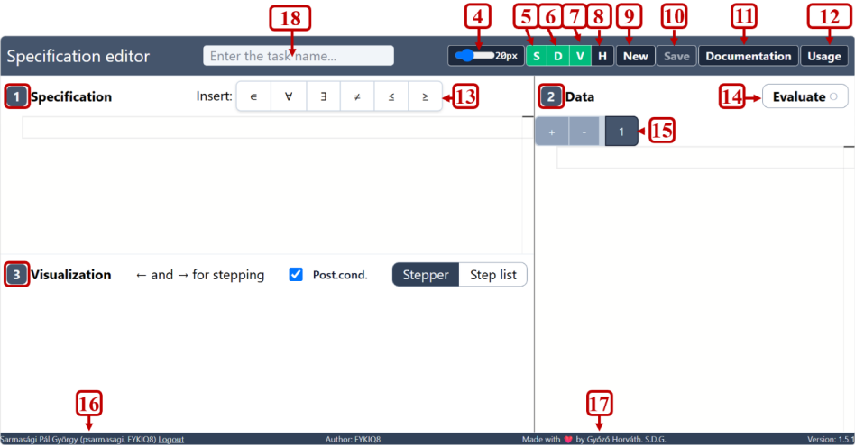
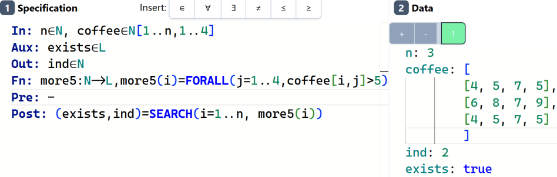

Introduction
Welcome to The Specification Editor Book. It is a complete guide to the
ELTE Specification Editor (Specifikációszerkesztő), the web application at
https://progalap.elte.hu/specifikacio/ that is used throughout the course
PROGRAMMING (Programozás alapjai, IP-18fPROGEG) at the Faculty of
Informatics of Eötvös Loránd University.
The editor lets you write a formal specification of a programming task: which data goes in, which data comes out, what must be true of the input, and what relationship must hold between input and output. It does more than store the text. It evaluates your specification against test cases you provide and shows, step by step, how it reaches its verdict. A green test means your specification describes the expected answer, and a red one means it doesn’t.
In: n∈N, nums∈N[1..n]
Out: cnt∈N
Pre: -
Post: cnt=COUNT(i=1..n, nums[i] mod 2 = 1)
n: 5
nums: [3, 72, 81, 4, 5]
cnt: 3
By the end of this book you will be able to read and write specifications like the one above, and much harder ones, with confidence.
Who this book is for
The book is for students taking the course, and for anyone else who has to use the Specification Editor. You don’t need prior programming experience. You should be comfortable with basic mathematical notation such as sets, intervals and “for every”/“there exists”. The book explains everything else as it goes.
How to use this book
The chapters build on each other, so the first time through, read them in order:
- Getting started walks through the user interface and has you write, test and share a complete specification within a few minutes.
- The specification language covers the grammar in detail: blocks, types, expressions, quantifiers and functions.
- Programming theorems gives one chapter to each algorithmic pattern
(
SUM,COUNT,MAX,SEARCH,MIS,CONDMAX, …). Each one explains the pattern’s meaning, its exact syntax, a complete example and the usual mistakes. - Testing and evaluation explains the test-data format, the stepper, and what each error message means.
- Worked examples solves real course tasks from the problem statement to a green test suite.
- speci-local describes the offline editor that reimplements the online tool, with more detailed error messages.
- The appendices are a quick reference: grammar, symbols and keyboard shortcuts, an English–Hungarian glossary, and an FAQ.
Once you know your way around, use the search button (S or /) to jump straight to what you need.
Conventions
Code blocks with a specification look like this:
Post: sum=SUM(i=1..n, numbers[i])
Test cases (the content of the editor’s Data pane) are marked TEST in the lower right corner:
n: 3
numbers: [1, 2, 3]
sum: 6
A test marked ✗ RED is supposed to fail. It shows what the editor does when the data doesn’t fit the specification.
The editor accepts English keywords (In:, Out:, Pre:, Post:, and,
or) and Hungarian ones (Be:, Ki:, Ef:, Uf:, és, vagy). This book
mostly uses the English forms and always shows the Hungarian equivalent
alongside. Appendix C lists every pair.
You’ll also see the following callouts:
Note
Background information that helps you understand why.
Tip
A shortcut or habit that saves time.
Warning
A mistake that is easy to make and costs points.
Important
A rule the editor enforces. If you break it, you get an error.
Every complete example in this book (a specification followed by test cases) was checked in the online editor, so you can copy it into the editor and expect the same result. speci-local gives the same results too.
Sources
This book brings together everything known about the tool. Its sources are the official course manual (Manual for the Specification Editor tool, 3rd edition), the editor’s own built-in documentation, many verified course solutions, and behaviour confirmed by experiment. Where the sources disagreed, the behaviour of the live editor won. Anything still uncertain is marked as such.
The book was written by csabi.zip. The source is on GitHub.
The Specification Editor
At ELTE, solving a programming task is split into three formal phases:
- Specification (specifikáció): describe what the program must do. You fix the state space (input, auxiliary and output data), a precondition on the input and a postcondition that links input to output.
- Algorithm design (algoritmus): derive how to do it, usually by recognising a programming theorem in the specification and using its ready-made algorithm.
- Implementation and testing (implementáció): translate the algorithm into a real programming language and test it.
The Specification Editor is the tool for phase 1. A specification written on paper can’t be checked. One written in the editor can be run. The editor:
- parses your specification and reports any syntax errors,
- reads each test case you wrote and checks that the data matches the declared types,
- checks the precondition on the test input,
- evaluates the postcondition with the test’s input and expected output, and
- marks the test green if everything holds, and red otherwise.
It can also show the evaluation step by step, which helps a lot when a test is unexpectedly red.
Getting access
Open https://progalap.elte.hu/specifikacio/ in a browser. The editor requires your ELTE account: sign in with the same username and password you use for the university network (your Caesar/INF login). Your name appears at the bottom left of the window once you are logged in.
Tip
The login service is sometimes unavailable, for example right before a deadline. The offline editor speci-local runs on your own computer without any login and accepts the same specifications.
In this chapter
- A tour of the interface explains every button and pane.
- Your first specification takes you from an empty editor to a green test.
- Saving and sharing shows how to keep your work and send it to someone.
A tour of the interface
The editor’s window is divided into panes, with a toolbar across the top. The numbers in the screenshot match the list below.

| # | Element | What it does |
|---|---|---|
| 1 | Specification pane | Where you write the specification (top left). |
| 2 | Data pane | Where you write test cases (right). |
| 3 | Visualization pane | Shows the evaluation of the selected test case (bottom left). |
| 4 | Font size slider | Changes the font size of the editors. |
| 5 | S | Shows/hides the Specification pane. |
| 6 | D | Shows/hides the Data pane. |
| 7 | V | Shows/hides the Visualization pane. |
| 8 | H | Shows/hides the History pane (earlier saved versions). |
| 9 | New | Starts a new, empty specification. |
| 10 | Save | Saves the current specification on the server (see Saving and sharing). |
| 11 | Documentation | Opens the built-in documentation, in Hungarian (see Appendix E). |
| 12 | Usage | Opens the usage manual, in Hungarian. |
| 13 | Insert | Buttons that insert the special characters ∈ ∀ ∃ ≠ ≤ ≥. |
| 14 | Evaluate | Evaluates the specification on every test case. |
| 15 | Test case tabs | One tab per test case. + adds one, - removes the selected one. After evaluation a tab turns green (passed) or red (failed). |
| 16 | Current user | Your name and login, with a Logout link. |
| 17 | Copyright | Author and version information. |
| 18 | Task name | The title of the specification. Give every specification a name before you save it. |
The green buttons S, D, V are toggles: green means the pane is visible. If the screen is small, hide what you don’t need. For example, hide the Data pane while you work on the specification.
The Specification pane
This is an ordinary text editor with syntax highlighting. Type the
specification here, block by block (In:, Out:, Pre:, Post:, …). The
Insert buttons above it (13) put the mathematical symbols at the cursor.
You can also type their ASCII equivalents:
| Symbol | Button | You can also type |
|---|---|---|
∈ | ∈ | in (Hungarian: eleme) |
∀ | ∀ | forall (Hungarian: minden) |
∃ | ∃ | exists (Hungarian: létezik) |
≠ | ≠ | != |
≤ | ≤ | <= |
≥ | ≥ | >= |
When the specification has an error, the editor marks the line and shows a
message such as Line 3, column 7: Expected …. Chapter
Error messages and common mistakes explains the frequent
ones.
The Data pane
Each tab of the Data pane holds one test case: values for the input variables and the expected values of the output (and auxiliary) variables, in a YAML-like format:
n: 5
nums: [3, 72, 81, 4, 5]
cnt: 3
Tip
Put the cursor in an empty test case and press Shift+Space, then Tab. The editor inserts a template with every declared variable, so you only have to fill in the values.

The Visualization pane
After you press Evaluate, this pane shows how the postcondition was evaluated for the selected test case. It has two views:
- Stepper: one evaluation step at a time. Step with the ← and → keys.
- Step list: all steps at once, one per line.
The Post.cond. checkbox decides whether the postcondition’s evaluation is shown. Chapter Stepper and step list explains how to read the trace.
Your first specification
Let’s solve a small task completely, from the problem statement to a green test.
Task. We are given n natural numbers. How many of them are odd?
Step 1: Decide the data
Read the task and list what goes in and what comes out:
- in: how many numbers there are (
n) and the numbers themselves (nums), - out: the count of odd numbers (
cnt).
In the editor, every piece of data is declared as name ∈ set. A natural
number is an element of N, and n natural numbers indexed from 1 to n are
an element of N[1..n]:
In: n∈N, nums∈N[1..n]
Out: cnt∈N
Variable names start with a lowercase letter. Set names (N, Z, …) start
with an uppercase letter. Declarations in one block are separated by commas.
Step 2: The precondition
The precondition says what must be true about the input. Here any input makes sense, so the precondition is simply “true”. The usual way to write that is a dash:
Pre: -
Step 3: The postcondition
The postcondition states what must be true of the output. cnt is the number
of indices i between 1 and n for which nums[i] is odd. This is the
counting pattern, and the editor has a macro for it:
Post: cnt=COUNT(i=1..n, nums[i] mod 2 = 1)
COUNT(i=1..n, condition) goes through i = 1, 2, …, n and counts how many
times the condition holds. mod is the remainder operator, so
nums[i] mod 2 = 1 means “nums[i] is odd”.
Put together, the specification looks like this. Type it into the
Specification pane (use the Insert buttons for ∈):
In: n∈N, nums∈N[1..n]
Out: cnt∈N
Pre: -
Post: cnt=COUNT(i=1..n, nums[i] mod 2 = 1)
Step 4: A test case
Click into the Data pane and write a test. The input values come first, then the output value you expect:
n: 5
nums: [3, 72, 81, 4, 5]
cnt: 3
Three of the five numbers (3, 81 and 5) are odd, so we expect cnt: 3.
Step 5: Evaluate
Press Evaluate. The test tab turns green: with this input and this output, the postcondition is true.
Now see what a mistake looks like. Add a second test case with + and enter a
wrong expectation on purpose:
n: 5
nums: [3, 72, 81, 4, 5]
cnt: 2
This tab turns red: COUNT gives 3, but the test says 2. Open the
Visualization pane to watch the evaluation step by step.
Note
The editor doesn’t “run a program”. It checks a statement: the given output fits the given input. That’s why every test case must contain the expected output too. You are describing the answer, not computing it.
Step 6: More tests
A single test proves little. Add a few that probe the edges of the task:
n: 3
nums: [2, 4, 6]
cnt: 0
n: 0
nums: []
cnt: 0
The second one is an empty input. COUNT over the empty range 1..0 is 0.
Chapter Writing a good test suite explains how to
choose tests systematically.
The same in Hungarian
The editor accepts the Hungarian keywords too. This specification is exactly equivalent:
Be: n∈N, szamok∈N[1..n]
Ki: db∈N
Ef: -
Uf: db=DARAB(i=1..n, szamok[i] mod 2 = 1)
n: 5
szamok: [3, 72, 81, 4, 5]
db: 3
Here Be, Ki, Ef, Uf stand for bemenet (input), kimenet (output),
előfeltétel (precondition) and utófeltétel (postcondition), and DARAB is
the Hungarian name of COUNT.
What’s next
You have written, tested and evaluated a complete specification. The next section shows how to save it. After that, Part II explains each element of the language in detail.
Saving and sharing
Saving
- Give the specification a name in the task name field at the top of the window (for example OddCount).
- Click Save.
The specification and all of its test cases are stored on the ELTE server. Saving changes the page address: it now contains a unique identifier.
https://progalap.elte.hu/specifikacio/v1/?uuid=058de53d-56cd-4733-93f1-8f4cf2212a86
This address is a permanent link (permalink) to the saved version.
Important
The Save button is only active once there is something to save. Save only a specification without errors: one that parses and passes its tests.
Sharing
To share your work, for example to submit it or to ask a teacher for help, copy the address from the browser’s address bar after saving and send it. Whoever opens the link sees the specification with all its test cases and can evaluate it.
Examples from the official course material:
| Task | Link |
|---|---|
| Selecting the first odd number | ecacc1f7-… |
| Counting odd numbers | 058de53d-… |
| Search that fails | 3cacade4-… |
(You need to be logged in to open them.)
History
Each save creates a new version. The H button opens the History pane, where you can go back to earlier saved versions of the specification.
New specification
New clears the editor for a new task. Save the current one first if you want to keep it.
Tip
To keep a copy on your own computer, or to share a specification without the ELTE login, use speci-local. It saves to plain
.spfiles and can copy a whole project, tests included, as a single line of text. Both work only in speci-local: the online editor can’t open, import or paste them.
Anatomy of a specification
A specification is a sequence of blocks. Each block starts with a header (a keyword followed by a colon) and describes one part of the task:
| Block | English | Hungarian | Required | Contents |
|---|---|---|---|---|
| Input | In: | Be: | yes | Declarations of the input data. |
| Auxiliary | Aux: | Sa: | no | Declarations of helper data used by the postcondition. |
| Output | Out: | Ki: | yes | Declarations of the output data. |
| Functions | Fn: | Fv: | no | Definitions of helper functions. |
| Precondition | Pre: | Ef: | yes | A logical statement about the input. |
| Postcondition | Post: | Uf: | yes | A logical statement linking input and output. |
Mathematically, the declaration blocks define the state space of the task, the set of all possible combinations of input, auxiliary and output values. The precondition picks out the meaningful inputs, and the postcondition picks out, for each such input, the correct outputs.
Here is a specification that uses all six blocks:
In: n∈N, k∈N, prices∈N[1..n]
Aux: found∈L, ind∈N
Out: first∈Z
Fn: cheap:N->L, cheap(i)=prices[i]<k
Pre: n≥1
Post: (found,ind)=SEARCH(i=1..n, cheap(i)) and
(found -> first=ind) and
(not found -> first=-1)
n: 4
k: 100
prices: [250, 90, 120, 40]
found: true
ind: 2
first: 2
n: 2
k: 10
prices: [250, 90]
found: false
ind: 1
first: -1
Read it like this: given n, k and n prices, where n is at least 1, the output
first is the index of the first price below k, or −1 if there is none. Don’t
worry if SEARCH isn’t clear yet. Its chapter is Search.
In this chapter
- Blocks and layout: how to write headers, the order of the blocks, single-line vs. multi-line layout.
- Names, comments and reserved words: which names are legal and how to comment.
- The all-variables rule: the check that surprises everyone once.
Blocks and layout
Header spelling
The headers are case-sensitive and must be spelled exactly:
| English | Hungarian | Hungarian meaning |
|---|---|---|
In: | Be: | Bemenet: input |
Aux: | Sa: | Segédadat: auxiliary data |
Out: | Ki: | Kimenet: output |
Fn: | Fv: | Függvény: function |
Pre: | Ef: | Előfeltétel: precondition |
Post: | Uf: | Utófeltétel: postcondition |
Spellings such as in:, IN:, Pre : (space before the colon) or Input:
are not headers, and the editor reports a syntax error at them.
Warning
The Hungarian auxiliary header is
Sa:, notSegéd:. The obvious translation is wrong, and the editor answers it withExpected ",", "Aux:", "Ki:", "Out:", "Sa:", new line, or white space but "S" found.
Tip
If you are unsure what is allowed at some point, look at the error message: it lists everything the editor expected there. The message above, for example, shows that after a declaration list only a comma or another declaration block may follow.
Block order
The declaration blocks come first, and the logical statements come last:
In/Be → Aux/Sa → Out/Ki → Fn/Fv → Pre/Ef → Post/Uf
Note that the output block comes before the conditions. It declares the result,
so it isn’t the last block. Blocks you don’t need (Aux:, Fn:) are simply
left out.
You may mix English and Hungarian headers in one specification, but don’t. Pick one language per file.
Layout A: everything on one line
The payload can follow the header on the same line, after a space:
In: n∈N, nums∈Z[1..n]
Out: s∈Z
Pre: -
Post: s=SUM(i=1..n, nums[i])
n: 3
nums: [4, -1, 10]
s: 13
The official manual describes each header as including the trailing space,
“In: (there is a space at the end of the string)”. In this layout the
space is required.
Layout B: the header on its own line
The header can also stand alone, with the payload on the following lines. This is common in Hungarian course solutions, with one declaration per line:
Be:
n∈N,
k∈N,
ar∈N[1..n]
Ki:
db∈N
Ef:
n>=1 és k>=1
Uf:
db=DARAB(i=1..n, ar[i]<k)
n: 4
k: 100
ar: [250, 90, 120, 40]
db: 2
The rules for this layout:
- Each declaration except the last in its block ends with a comma, just as it would on a single line.
- Blank lines between blocks, and even between declarations within a block, are allowed.
- The header spelling is still case-sensitive.
Long conditions
A precondition or postcondition can continue across several lines. End the
line with an operator such as and so it’s clear the statement continues:
In: n∈N, x∈Z[1..n]
Out: pos∈N, neg∈N
Pre: -
Post: pos=COUNT(i=1..n, x[i]>0) and
neg=COUNT(i=1..n, x[i]<0)
n: 5
x: [3, -2, 0, 7, -9]
pos: 2
neg: 2
The indentation of the continuation lines is only for readability.
Several functions
Each function gets its own Fn: header (Fv: and Def: work too). Each
definition is a signature followed by the body:
In: n∈N, x∈N[1..n]
Out: s∈N
Fn: sq:N->N, sq(a)=a*a
Fn: even:N->L, even(a)=a mod 2 = 0
Pre: -
Post: s=SUM(i=1..n, sq(x[i]), even(x[i]))
n: 4
x: [1, 2, 3, 4]
s: 20
Listing several functions in one Fn: block, separated by commas, is a
syntax error.
Chapter Functions explains functions in detail.
Names, comments and reserved words
Variable names
A variable name
- starts with a lowercase letter,
- continues with letters and digits,
- contains no spaces or punctuation (
-,., …).
| Valid | Invalid | Why it’s invalid |
|---|---|---|
nums, x1, visitedCount | Nums | starts with an uppercase letter (that’s a set name) |
szam, ar, tav | visited count | contains a space |
r1, maxval | 1x | starts with a digit |
osztok, db | max-val | contains - (read as subtraction) |
Hungarian accented letters (á, é, ő, …) are accepted in names, as the
built-in documentation does with név and jegy. Many people avoid them
anyway, because they are awkward to type on some keyboards.
Set (type) names
The names of sets, both the built-in ones (N, Z, R, L, S, C) and
your own (Naming your own sets), start with an
uppercase letter: Student, Grade, Walk.
Reserved words
Some lowercase words are part of the language, so you can’t use them as variable names:
| Word | Meaning |
|---|---|
and, or, not | logical operators |
és, vagy, nem | the same in Hungarian |
mod | remainder |
in | the word form of ∈ |
exists, forall | the word forms of ∃ and ∀ |
true, false | logical constants |
Warning
Don’t name a variable
exists, even though old screenshots and manuals do:Aux: exists∈L. The current editor rejects it with the cryptic messageincomplite type for exists: undefined is not boolean. Usevan,talaltorfoundinstead, and rename it everywhere: in the declaration, in the postcondition and in every test case.
The theorem macros are written in uppercase (SUM, MAX, COUNT, …), so the
lowercase words sum, max, min and count are legal variable names:
In: n∈N, x∈N[1..n]
Out: sum∈N, max∈N
Pre: n>0
Post: sum=SUM(i=1..n, x[i]) and (,max)=MAX(i=1..n, x[i])
n: 3
x: [4, 9, 2]
sum: 15
max: 9
Comments
Two kinds of comments are accepted, both borrowed from C:
// …is a line comment that runs to the end of the line. It can follow real content on the same line./* … */is a block comment that can span several lines.
/* Count the divisors of a number.
i|n means: i divides n. */
In: n∈N
Out: d∈N
Pre: n>=1 // 0 would have infinitely many divisors
Post: d=COUNT(i=1..n, i|n)
n: 12
d: 6
A common habit in course solutions is to write the general form of the theorem in a comment and match it with the concrete names:
Post: (cnt,location)=MIS(i=1..n, runs[i].time>30, runs[i].loc)
/* (cnt,y)=MIS(i=b..e, A(i), f(i))
cnt, y ~ cnt, location
b..e ~ 1..n
A(i) ~ runs[i].time>30
f(i) ~ runs[i].loc
*/
The built-in documentation also uses /** … */ for headings. It’s an ordinary
block comment.
Whitespace
Spaces around operators are optional: sum = SUM(…) and sum=SUM(…) mean the
same. One exception is the x of the direct product (records, function
signatures), which needs a space on both sides: Z x Z.
The all-variables rule
Important
Every declared variable must appear in the postcondition. The editor checks this and rejects the specification otherwise.
The idea behind the rule is that if an input doesn’t influence the result, either it isn’t really input, or the postcondition forgot about it. The official manual puts it this way: “The postcondition must include all declared data.”
What the error looks like
In: n∈N, x∈N[1..n], extra∈N
Out: s∈N
Pre: extra>0
Post: s=SUM(i=1..n, x[i])
The editor answers:
Line 1, column 21: extra is missing from the post condition!
Three details about this message:
- It points at the variable’s declaration, not at the postcondition. A
red mark inside the
In:block means “this input is never used”. - Using the variable only in the precondition doesn’t count, as the example
shows with
extra>0. - This check runs after everything else has been parsed. If this is the only error you get, the syntax of the whole specification is fine.
Using a variable “indirectly”
A variable counts as used if it appears anywhere in the postcondition: as
a loop bound, inside an index, or inside a function the postcondition calls.
Here n appears only as the upper bound of the range, and k only inside the
function:
In: n∈N, k∈N, x∈N[1..n]
Out: c∈N
Fn: big:N->L, big(i)=x[i]>k
Pre: -
Post: c=COUNT(i=1..n, big(i))
n: 4
k: 5
x: [3, 8, 6, 1]
c: 2
Filling the gap: n=n
Sometimes a pattern really doesn’t need an input. The typical case is
SELECT, which has no upper bound. Then add a trivially
true identity to the postcondition:
In: n∈N, nums∈Z[1..n]
Out: ind∈N
Pre: ∃i∈[1..n]:(nums[i] mod 2 = 1)
Post: ind=SELECT(i>=1, nums[i] mod 2 = 1) and n=n
n: 5
nums: [23, 25, 26, 28, 29]
ind: 1
n=n is always true, so it doesn’t change the meaning, but n now appears in
the postcondition. If several variables are unused, chain them:
… and n=n and k=k.
Note
The rule covers every declared variable: inputs, auxiliary and output variables, and constants declared with a value. Inputs are the ones you usually trip over, because auxiliary and output variables are constrained by the postcondition anyway.
Types and data
Every variable is declared as an element of a set:
a∈N
This reads “a is one element of the set of natural numbers”. The set plays the role of the type. The editor uses it to check the test data, and it restricts which values the variable may take.
You can type ∈ with the Insert button, or write the word in
(Hungarian: eleme) instead:
In: a in N, b∈Z
Out: c∈Z
Pre: -
Post: c=a+b
a: 3
b: -5
c: -2
The sets you can use are built from a few simple pieces:
| Kind | Example | Chapter |
|---|---|---|
| Elementary sets | N, Z, R, L, S, C | Elementary sets and intervals |
| Intervals | [1..10] | Elementary sets and intervals |
| Arrays (sequences) | N[1..n], Z[] | Arrays |
| Matrices | Z[1..n,1..m] | Matrices and arrays of arrays |
| Records (direct products) | (name:S x age:N) | Records and tuples |
| Your own names | Student=(name:S x grade:N) | Naming your own sets |
The pieces can be combined freely, for example into an array of records whose fields are arrays.
Elementary sets and intervals
Elementary sets
| Set | Name | Values | Example | Test data |
|---|---|---|---|---|
N | natural numbers | 0, 1, 2, … | a∈N | a: 7 |
Z | integers | …, −1, 0, 1, … | b∈Z | b: -3 |
R | real numbers | e.g. 3.14 | c∈R | c: 2.5 |
L | logical values | true, false | d∈L | d: true |
S | strings (texts) | e.g. “apple” | e∈S | e: apple or e: "apple" |
C | characters | e.g. ‘x’ | f∈C | f: 'x' |
K (karakter) is accepted as the Hungarian name of C: f2∈K.
Note
Nincludes 0. If a quantity must be positive, say so in the precondition:Pre: n>0. If a value can be negative, such as a “−1 if not found” result, declare it inZ, notN.
An example using several of them:
In: name∈S, age∈N, height∈R
Out: adult∈L
Pre: height>0
Post: adult=(age≥18) and name=name and height=height
name: Anna
age: 19
height: 1.68
adult: true
name: "Bence"
age: 12
height: 1.45
adult: false
Intervals
An interval is the set of integers between two bounds, both included:
iv∈[1..3]
iv can be 1, 2 or 3. The bounds can be expressions involving other
input variables: [2+3..n*2].
Intervals are useful for small, fixed ranges such as grades and months:
In: grade∈[1..5]
Out: pass∈L
Pre: -
Post: pass=(grade≥2)
grade: 4
pass: true
A value outside the interval makes the test case fail, because the data doesn’t fit its declared type:
grade: 6
pass: true
Intervals also show up in quantifiers, ∀i∈[1..n]:(…), which is covered in
Quantifiers, and as the index range of arrays,
covered next.
Arrays
An array (indexed sequence, tömb) holds many values of the same type, each reachable through an index. Write the element set first, then the index range in square brackets:
x∈N[1..3]
x is a sequence of three natural numbers with indices 1, 2, 3. Its elements are
x[1], x[2], x[3].
Ways to declare an array
| Declaration | Meaning |
|---|---|
x1∈N[1..3] | exactly 3 elements, indexed 1..3 |
x2∈N[-1..1] | 3 elements, indexed −1, 0, 1 |
n∈N, x∈Z[1..n] | n elements, where n is also input (the usual course convention) |
x3∈N[1..] | any length, indexed from 1; the test data decides the length |
x4∈N[0..] | any length, indexed from 0 |
x5∈N[] | shorthand for N[1..] |
x6∈N[]=[5,1,2] | constant array with initial values |
x7∈N[2+3..n*2] | bounds may be simple expressions |
The most common form is the third: the length n is an input, and the array
is N[1..n]. The editor then checks that the test data really has n elements.
In: n∈N, temps∈Z[1..n]
Out: s∈Z
Pre: -
Post: s=SUM(i=1..n, temps[i])
n: 4
temps: [-3, 2, 5, -1]
s: 3
If the length in the data doesn’t match n, the test fails:
n: 3
temps: [-3, 2, 5, -1]
s: 3
Length and bounds: length, from, to
When the array has an open range (N[1..], N[]), you can query its size in
the specification:
| Function | Hungarian | Result |
|---|---|---|
length(x) | hossz(x) | number of elements |
from(x) | tól(x) | first index |
to(x) | ig(x) | last index |
In: x∈Z[]
Out: s∈Z
Pre: -
Post: s=SUM(i=1..length(x), x[i])
x: [10, 20, 30]
s: 60
With from and to, a specification works for any index range. Here the
input is indexed from 0:
In: x∈Z[0..]
Out: s∈Z
Pre: -
Post: s=SUM(i=from(x)..to(x), x[i])
x: [10, 20, 30]
s: 60
Note
The Hungarian names
hossz,tól,ig(from the editor’s built-in documentation) work too.
Indexing
x[i] is the element at index i. The index can be any expression:
x[i+1], x[n], x[-i]. Reading outside the index range is an error during
evaluation. This often happens when comparing neighbours:
// wrong: for i=n, x[i+1] doesn't exist
Post: c=COUNT(i=1..n, x[i]<x[i+1])
// right: stop one earlier
Post: c=COUNT(i=1..n-1, x[i]<x[i+1])
Constant arrays
An array with an initial value is fixed data that is part of the task, for example a lookup table:
In: days∈N[1..12]=[31,28,31,30,31,30,31,31,30,31,30,31], m∈[1..12]
Out: d∈N
Pre: -
Post: d=days[m]
m: 4
d: 30
The value comes from the declaration, so the test data leaves days out.
A test that repeats it is red: “data cannot contain item with the same name:
days”.
The worked example Card values uses the same technique with strings.
Array literals
In conditions you can also write arrays directly, but that’s rarely needed:
[1, 2, 3]=[1, 2, 3]
[0..:1, 2, 3] // literal with an explicit index range: indices 0..2
Two literals are equal only if their index ranges match too.
Matrices and arrays of arrays
Matrices
A matrix (two-dimensional array, mátrix) has two index ranges separated by a comma:
m1∈Z[1..8,1..8]
This is an 8×8 matrix of integers. An element is addressed with both indices
in one pair of brackets: m1[3,6] is row 3, column 6.
| Declaration | Meaning |
|---|---|
m1∈Z[1..8,1..8] | 8×8 matrix |
m2∈Z[1..n,1..m] | n×m matrix, with n and m as inputs |
m3∈Z[0..,0..] | any size, indexed from 0; the data decides the size |
m4∈Z[,] | shorthand for Z[1..,1..] |
m5∈Z[-1..1,-1..1]=[[2,1,2],[1,0,1],[2,1,1]] | matrix with an initial value |
In the test data, a matrix is written as a list of rows:
In: n∈N, m∈N, t∈Z[1..n,1..m]
Out: s∈Z
Pre: -
Post: s=SUM(i=1..n, SUM(j=1..m, t[i,j]))
n: 2
m: 3
t: [
[1, 2, 3],
[4, 5, 6]
]
s: 21
The same data on one line also works: t: [[1,2,3],[4,5,6]].

Arrays of arrays
Warning
m∈Z[1..n,1..m]andm∈Z[1..n][1..m]are not the same. The first is a matrix, indexed asm[i,j]. The second is a sequence of sequences, indexed asm[i][j]. They can’t be used interchangeably.
An array of arrays is useful when the rows have different lengths, a “jagged” structure that a matrix can’t describe. The cleanest way to write it is with a named row type:
In: rows∈Row[], Row=N[]
Out: total∈N
Pre: -
Post: total=SUM(i=1..length(rows), length(rows[i]))
rows: [[1, 2, 3], [4], [], [5, 6]]
total: 6
Here rows[i] is itself an array, so length(rows[i]) is the length of row i
and rows[i][j] is one element.
Quantifiers over matrices
Going through a matrix takes two nested loops. Quantifiers and theorems can be nested the same way. This one says “every row contains a 10”:
In: n∈N, m∈N, t∈N[1..n,1..m]
Out: ok∈L
Pre: -
Post: ok=FORALL(i=1..n, EXISTS(j=1..m, t[i,j]=10))
n: 2
m: 3
t: [[10, 1, 2], [3, 10, 10]]
ok: true
n: 2
m: 3
t: [[10, 1, 2], [3, 4, 5]]
ok: false
The worked example Yossarian’s map finds the maximum of a matrix.
Records and tuples
Records
A record (structure, rekord) bundles values of different types into one
unit. In the specification it is the direct product of its fields’
sets, written with x between the fields:
r1∈(name:S x grade:N)
r1 is one element of S × N, a name–grade pair. Fields are accessed with a dot:
r1.name, r1.grade.
| Declaration | Meaning |
|---|---|
r1∈name:S x grade:N | parentheses are optional |
r2∈(name:S x grade:N) | the usual form |
r3∈(north:L x east:L x south:L x west:L) | any number of fields |
r4∈(a:[1..2] x b:[3..4]) | fields can be intervals: r4 is one of (1,3), (1,4), (2,3), (2,4) |
Important
The
xneeds a space on both sides:name:S x grade:N.
In the test data, a record is written either in the multi-line YAML form or
in the compact {…} form:
In: r∈(name:S x grade:N)
Out: pass∈L
Pre: r.grade≥1 and r.grade≤5
Post: pass=(r.grade≥2)
r:
name: Anna
grade: 4
pass: true
r: {name: Bence, grade: 1}
pass: false
Arrays of records
Most real tasks have an array of records, such as a list of students or measurements. It’s clearer to name the record type first (see Naming your own sets):
In: n∈N, st∈Student[1..n], Student=(name:S x grade:N)
Out: c∈N
Pre: ∀i∈[1..n]:(1≤st[i].grade≤5)
Post: c=COUNT(i=1..n, st[i].grade=5)
n: 3
st:
- name: Anna
grade: 5
- name: Bence
grade: 3
- name: Cili
grade: 5
c: 2
n: 2
st: [{name: Anna, grade: 2}, {name: Bence, grade: 4}]
c: 0
st[i].grade reads “the grade field of element i of st”.
Warning
Field names in the test data must match the declaration exactly, including upper and lower case:
gradeis notGrade.
Tuples
A tuple groups values without declaring a record: (3, 5). Its
components are numbered from 1: (3, 5).1 = 3, (3, 5).2 = 5.
In: a∈Z, b∈Z
Out: ok∈L
Pre: -
Post: ok=((a, b).2=b and (a, b)=(a, b))
a: 3
b: 5
ok: true
You can’t declare a variable of tuple type, but tuples are central to the
programming theorems: many of them return several values at once.
MAX returns an (index, value) pair, and SEARCH returns a (found, index) pair.
You take them apart by putting a tuple of variables on the left side:
In: n∈N, x∈Z[1..n]
Out: ind∈N, val∈Z
Pre: n>0
Post: (ind, val)=MAX(i=1..n, x[i])
n: 4
x: [3, 9, -2, 9]
ind: 2
val: 9
Leave a position empty to ignore that component: (ind,)=MAX(…) keeps only
the index, and (,val)=MAX(…) keeps only the value. See
Maximum and minimum for details.
Functions can return tuples too: swap:Z x Z->Z x Z, swap(a,b)=(b,a). The
components of a theorem result can also be accessed by name, for example
.maxval and .maxind for MAX. The worked example
Yossarian’s map uses this.
Naming your own sets
Any set can be given a name with Name=Set. The name starts with an
uppercase letter, and the definition goes into a declaration block next
to the variables:
In: j∈Grade, Grade=[1..5]
Out: ok∈L
Pre: -
Post: ok=(j≥2)
j: 3
ok: true
Use = for the definition, not :=.
Why name sets?
Names make complex data readable. Compare
h1∈(name:S x grade:N)[1..]
with
h2∈Student[1..], Student=(name:S x grade:N)
The second one says what the data is. Once a set has a name you can use it
in several places: in other declarations, in function signatures
(grade:Student->N), and inside other named sets.
Chains and nesting
Names can refer to other names, so you can build long chains:
In: j2∈Mark, Mark=OneToFive, OneToFive=[1..5]
Out: ok∈L
Pre: -
Post: ok=(j2=j2)
j2: 5
ok: true
They can also be nested to describe deep structures. In this example each student has a list of grades:
In: cls∈Class, Class=Student[], Student=(name:S x grades:Grade[]), Grade=[1..5]
Out: c∈N
Pre: -
Post: c=COUNT(i=1..length(cls), length(cls[i].grades)>0)
cls:
- name: Anna
grades: [5, 4, 5]
- name: Bence
grades: []
c: 1
A definition can come before or after its first use. The built-in documentation
writes j∈Grade, Grade=[1..5]. Some course solutions put the record definition
first: In: Trun=(time:N x loc:S), n∈N, runs∈Trun[1..n].
Where to put the definitions
The definitions go into the declaration blocks (In:, Aux:, Out:) and are
separated from the variables by commas. Convention is to put them in the block
where they’re first needed, usually In:.
Expressions and logic
The precondition and the postcondition are logical statements: expressions
whose value is true or false. They are built from
- values: variables, constants (
3,-1,2.5,"text",true), array elements (x[i]), fields (r.name), tuples ((3,5)), - operators: arithmetic (
+ - * / mod), comparison (= ≠ < > ≤ ≥) and logic (and or not ->), - quantifiers:
∀(for all) and∃(there exists), - function calls: built-in (
length(x)) or your own (f(i)), - theorem macros:
SUM,COUNT,MAX, … (in Part III).
In: n∈N, x∈Z[1..n]
Out: ok∈L
Pre: n>0
Post: ok=(∀i∈[1..n]:(x[i]≥0) and x[1] mod 2 = 0)
n: 3
x: [4, 7, 0]
ok: true
n: 3
x: [4, -7, 0]
ok: false
In this chapter
- Operators: arithmetic, comparison and logic, with their Hungarian and ASCII forms.
- Quantifiers: ∀ and ∃: statements about many elements at once.
- Writing preconditions: what belongs in
Pre:.
Operators
Arithmetic
| Operator | Meaning | Example |
|---|---|---|
+ - * | addition, subtraction, multiplication | a+b*2 |
/ | division | s/n |
mod or % | remainder | x mod 2 = 1, i%2=1 |
- (prefix) | negation | -x[i] |
abs(…) | absolute value | abs(x[i]) |
The usual precedence applies (* before +), and parentheses can be added
freely.
Comparison
| Symbol | ASCII | Meaning |
|---|---|---|
= | = | equal |
≠ | != | not equal |
< | < | less than |
> | > | greater than |
≤ | <= | less than or equal |
≥ | >= | greater than or equal |
| | divides: a|b means b mod a = 0 |
Both forms are accepted, so you can type a whole specification on an ordinary
keyboard: 1<=n and n<=100.
Comparisons can be chained as in mathematics: 2≤a≤7 means 2≤a and a≤7.
In: a∈Z
Out: inRange∈L
Pre: -
Post: inRange=(2≤a≤7)
a: 5
inRange: true
a: 8
inRange: false
The divisibility relation | is a compact way to talk about divisors:
In: n∈N
Out: d∈N
Pre: n≥1
Post: d=COUNT(i=1..n, i|n)
n: 12
d: 6
Logic
| Operator | Hungarian | Meaning |
|---|---|---|
and | és | both are true |
or | vagy | at least one is true |
not | nem | negation |
-> | implication (the Unicode arrow → is rejected) | |
true, false | igaz, hamis | constants |
Note
The Hungarian constants
igazandhamiscome from the editor’s built-in documentation. In test data, onlytrueandfalsework.
Implication
A -> B (“if A then B”) is false only when A is true and B is false:
| A | B | A -> B |
|---|---|---|
| true | true | true |
| true | false | false |
| false | true | true |
| false | false | true |
When A is false, the implication is true whatever B is. That makes implication the tool for conditional requirements: “if a match was found, the output is its name, and otherwise the output doesn’t matter”.
In: n∈N, x∈Z[1..n]
Aux: found∈L, ind∈N
Out: neg∈Z
Pre: -
Post: (found,ind)=SEARCH(i=1..n, x[i]<0) and
(found -> neg=x[ind])
n: 3
x: [5, -2, -8]
found: true
ind: 2
neg: -2
n: 2
x: [5, 2]
found: false
ind: 1
neg: 0
In the second test nothing was found, so neg may be anything. Chapter
Search has more on this.
Precedence
From strongest to weakest: arithmetic, then comparisons, then not, and,
or, ->. When in doubt, add parentheses. They cost nothing:
Pre: n>0 and (3<4 or ((3)>4))
Tip
Don’t mix the English and Hungarian operators in one statement (
a vagy b and c). It parses, but it’s hard to read.
Logical values as data
A variable of type L is an ordinary value: it can be compared and combined
like any other.
In: a∈L, b∈L
Out: x∈L
Pre: -
Post: x=(a and not b)
a: true
b: false
x: true
Quantifiers: ∀ and ∃
Quantifiers let one statement talk about every element of an interval, or about at least one of them. They are the backbone of preconditions and of many postconditions.
The universal quantifier ∀
∀i∈[1..3]:(i>0)
Read: for every i in [1..3], i > 0 holds. The general form is
∀variable∈[from..to]:(statement)
It is most often used to go through the indices of an array:
In: n∈N, x∈Z[1..n]
Out: allBig∈L
Pre: -
Post: allBig=∀i∈[1..n]:(x[i]>10)
n: 3
x: [11, 25, 12]
allBig: true
n: 3
x: [11, 5, 12]
allBig: false
The existential quantifier ∃
∃i∈[1..3]:(i=2)
Read: there is an i in [1..3] for which i = 2. For arrays, this says that some element has a property:
In: n∈N, x∈Z[1..n]
Out: hasSmall∈L
Pre: -
Post: hasSmall=∃i∈[1..n]:(x[i]<3)
n: 4
x: [7, 9, 2, 8]
hasSmall: true
Word forms
The symbols can be typed as words too:
| Symbol | English word | Hungarian word |
|---|---|---|
∀ | forall | minden |
∃ | exists | létezik |
∈ | in | eleme |
In: n∈N, x∈N[1..n]
Out: ok∈L
Pre: -
Post: ok=forall i in [1..n]:(x[i]>0)
n: 2
x: [1, 2]
ok: true
The Hungarian word forms from the built-in documentation work too:
Be: n∈N, x∈N[1..n]
Ki: ok∈L
Ef: igaz
Uf: ok=minden i eleme [1..n]:(x[i]>0) és létezik i eleme [1..n]:(x[i]=1)
Open-ended arrays
When the array’s length isn’t an input, take the bounds from the array itself:
In: x∈N[]
Out: hasSmall∈L
Pre: -
Post: hasSmall=(∃i∈[1..length(x)]:(x[i]<3) and ∃i∈[from(x)..to(x)]:(x[i]<3))
x: [5, 1, 9]
hasSmall: true
Nesting
Quantifiers can be nested, for example to talk about every row of a matrix and the elements within the row. Every row contains a 10:
In: m∈N[1..3,1..3]
Out: ok∈L
Pre: -
Post: ok=∀i∈[1..3]:(∃j∈[1..3]:(m[i,j]=10))
m: [[10, 0, 0], [0, 10, 0], [1, 2, 10]]
ok: true
The inner quantifier can refer to the outer variable. x is sorted in non-decreasing order, meaning every element is at most every later one:
In: n∈N, x∈Z[1..n]
Out: sorted∈L
Pre: -
Post: sorted=∀i∈[1..n]:(∀j∈[i+1..n]:(x[i]≤x[j]))
n: 4
x: [1, 3, 3, 8]
sorted: true
n: 4
x: [1, 3, 2, 8]
sorted: false
Empty ranges
If the interval is empty (for example [1..0] when n = 0),
∀is true: there is no element that violates the statement,∃is false: there is no element that satisfies it.
You’ll use this constantly. ∀j∈[1..i-1]:(…) is “nothing before i…”, and for
i = 1 it is automatically true.
In: n∈N, x∈Z[1..n]
Out: a∈L, e∈L
Pre: -
Post: a=∀i∈[1..n]:(x[i]>0) and e=∃i∈[1..n]:(x[i]>0)
n: 0
x: []
a: true
e: false
Quantifiers versus theorems
∀i∈[1..n]:(β(i)) and FORALL(i=1..n, β(i)) mean the same thing, and so do
∃i∈[1..n]:(β(i)) and EXISTS(i=1..n, β(i)). The quantifier form is the
mathematical notation used in lectures. The macro form names the programming
theorem (decision) and tells the reader which algorithm to use. See
Decision.
Writing preconditions
The precondition (Pre:, Hungarian Ef:) is a statement about the
input. It must be true for the task to make sense. If a test case’s input
violates it, the test is red, whatever the output.
The precondition block is required. When the task puts no restriction on the input, write one of these equivalent forms:
Pre: -
Pre: true
Pre: not false
Pre: 3=3
The dash is the usual convention.
Typical preconditions
Ranges of single values. a is between 2 and 7. Three equivalent forms:
Pre: a∈[2..7]
Pre: 2≤a≤7
Pre: a≥2 and a≤7
Positive sizes. There is at least one element:
Pre: n>0
Constraints on every element. Every price is between 1 and 10 000:
Pre: ∀i∈[1..n]:(1≤price[i]≤10000)
Relations between inputs. 1 < d < n:
Pre: 1<d<n
Guarantees the postcondition relies on. There is an odd number,
required by SELECT:
Pre: ∃i∈[1..n]:(nums[i] mod 2 = 1)
Statements can be combined with and. Don’t forget the operator between
them: two statements written one after the other are a syntax error.
Example
We are given the heights of n ≥ 1 children in centimetres (each between 50 and 250). What is the average height?
In: n∈N, h∈N[1..n]
Out: avg∈R
Pre: n≥1 and ∀i∈[1..n]:(50≤h[i]≤250)
Post: avg=SUM(i=1..n, h[i])/n
n: 4
h: [120, 130, 125, 135]
avg: 127.5
Input that violates the precondition makes the test red:
n: 2
h: [120, 300]
avg: 210
Warning
Copy bounds from the statement one by one. A precondition that is too loose never shows up as a red test. Your tests pass while the specification accepts inputs the task forbids. Check every number in your
Pre:against the statement.
What doesn’t belong in the precondition
- Statements about the output. The precondition only restricts the input.
- Things already guaranteed by the types.
n∈Nalready excludes −1, son≥0adds nothing. - The answer itself. Even when you know “the answer exists”, the postcondition still has to say what it is.
Functions
The Fn: block (Hungarian Fv:) defines helper functions, the same way as in
secondary-school mathematics. First comes the signature, with the domain and
range sets, and then the rule that assigns the value:
Fn: f:N->N, f(p)=p*2
Read: f maps natural numbers to natural numbers, and f(p) = 2p.
The block is optional. You need it mostly for compound tasks, where one programming theorem is nested in another (see Patterns inside functions). Even in simple tasks, a well-named function can make the postcondition much easier to read.
Syntax
Fn: name:Domain->Range, name(parameters)=expression
- The signature
name:Domain->Rangegives the sets. - After a comma comes the definition
name(parameters)=expression. - Several parameters: the domain is a direct product with
x(spaces on both sides!), e.g.Z x Z. - Several results: the range is a direct product too, and the body returns a tuple.
Tip
Write the arrow as ASCII
->. The Insert bar has no arrow button, and the Unicode→is a syntax error everywhere: in signatures and as implication alike. The arrows you see in screenshots are->drawn by the editor’s font.
Examples
| Definition | Meaning |
|---|---|
f:N->N, f(p)=p*2 | doubling |
square:Z->N, square(n)=n*n | a more descriptive name |
add:Z x Z->Z, add(a,b)=a+b | two parameters |
swap:Z x Z->Z x Z, swap(a,b)=(b,a) | returns a tuple |
f2:Z->Z, f2(p)=p+n | uses the input variable n |
grade:Student->N, grade(h)=h.grade | record parameter |
index:N[] x N->N, index(x,i)=x[i] | array parameter |
even:N->L, even(i)=x[i] mod 2 = 0 | logical function |
A complete example:
In: n∈N, x∈Z[1..n]
Out: s∈N
Fn: square:Z->N, square(a)=a*a
Pre: -
Post: s=SUM(i=1..n, square(x[i]))
n: 3
x: [1, -2, 3]
s: 14
Seeing the input variables
A function can use every declared variable, not just its parameters. In
the example below, big refers to the input k and the array x. This is
very common: functions usually take only the index as a parameter and look
up everything else.
In: n∈N, k∈N, x∈N[1..n]
Out: c∈N
Fn: big:N->L, big(i)=x[i]>k
Pre: -
Post: c=COUNT(i=1..n, big(i))
n: 5
k: 10
x: [4, 12, 10, 30, 11]
c: 3
If a parameter has the same name as a declared variable, the parameter shadows it: inside the function the name means the parameter.
Functions with several results
In: a∈Z, b∈Z
Out: c∈Z, d∈Z
Fn: swap:Z x Z->Z x Z, swap(p,q)=(q,p)
Pre: -
Post: (c,d)=swap(a,b)
a: 3
b: 8
c: 8
d: 3
Several functions
Give every definition its own Fn: header. A comma-separated list in one
block is a syntax error. Each function may use the ones before it:
In: n∈N, x∈N[1..n]
Out: c∈N
Fn: even:N->L, even(v)=v mod 2 = 0
Fn: good:N->L, good(i)=even(x[i]) and x[i]>0
Pre: -
Post: c=COUNT(i=1..n, good(i))
n: 5
x: [0, 2, 3, 8, 7]
c: 2
Record parameters
In: n∈N, st∈Student[1..n], Student=(name:S x grade:N)
Out: s∈N
Fn: grade:Student->N, grade(h)=h.grade
Pre: -
Post: s=SUM(i=1..n, grade(st[i]))
n: 2
st: [{name: Anna, grade: 5}, {name: Bence, grade: 3}]
s: 8
Patterns inside functions
The real power of functions is decomposition. When a task needs one theorem inside another, put the inner one in a function. The postcondition then shows the outer pattern clearly, and the function shows the inner one.
The table collects the most frequent combinations from the course material. Each is used in a complete example later in the book.
| Function | Inner pattern | Used in |
|---|---|---|
maxcol:N->N x N, maxcol(i)=MAX(j=1..m, map[i,j]) | maximum of row i | Yossarian’s map |
total:N->N, total(i)=SUM(j=i-d..i-1, tr[j]) | sum of the d previous values | Trurl’s robots |
more5:N->L, more5(i)=FORALL(j=1..4, coffe[i,j]>5) | every value of row i is > 5 | Catbert’s coffee breaks |
less5:N->L, less5(i)=EXISTS(j=1..4, coffe[i,j]<5) | some value of row i is < 5 | |
visits:N->N, visits(i)=COUNT(j=1..n, visited[j]=i) | how often i occurs | |
nV:N->L, nV(i)=FORALL(j=1..i-1, rs[i].time≠rs[j].time) | value i didn’t occur before | More short examples |
lt:N->L, lt(j)=FORALL(i=1..n, lates[i,j]>k) | every value of column j > k | More short examples |
Example: rows with a property
A conference lasted n days, with four coffee breaks a day. On how many days was every break above 5 litres?
The outer pattern is counting (how many days?), and the inner one is decision (is every break above 5?):
In: n∈N, coffe∈N[1..n,1..4]
Out: c∈N
Fn: more5:N->L, more5(i)=FORALL(j=1..4, coffe[i,j]>5)
Pre: -
Post: c=COUNT(i=1..n, more5(i))
n: 3
coffe: [
[4, 5, 7, 5],
[6, 8, 7, 9],
[6, 6, 7, 8]
]
c: 2
Example: how many times does each value occur?
n visits were recorded, each to one of the places 1..k. Which place was visited the most often?
The outer pattern is a maximum over the places. The function counts the visits to one place:
In: n∈N, k∈N, visited∈N[1..n]
Out: best∈N
Fn: visits:N->N, visits(p)=COUNT(j=1..n, visited[j]=p)
Pre: k≥1 and ∀i∈[1..n]:(1≤visited[i]≤k)
Post: (best,)=MAX(p=1..k, visits(p))
n: 6
k: 3
visited: [2, 3, 2, 1, 2, 3]
best: 2
Tip
When you read a task, look for “for each … how many / the largest / is there”. The word each usually marks the outer loop, and the question asked about each element marks the inner theorem that becomes a function.
Can I nest without a function?
Yes. A theorem can appear directly inside another:
In: n∈N, coffe∈N[1..n,1..4]
Out: c∈N
Pre: -
Post: c=COUNT(i=1..n, FORALL(j=1..4, coffe[i,j]>5))
n: 2
coffe: [[6, 6, 6, 6], [6, 1, 6, 6]]
c: 1
The meaning is the same. The function version is preferred in the course, because it names the inner pattern and makes the algorithm design (one function per nested theorem) straightforward.
Postconditions and theorems
The postcondition (Post:, Hungarian Uf:) is the most important part of
a specification. It is a logical statement about the input and the output,
and it is true exactly when the output is a correct answer for the input. It
has to mention every input variable (see
The all-variables rule).
You could write every postcondition with quantifiers alone, and Postconditions without theorems shows how. Most course tasks, though, are instances of a small number of standard programming theorems (programozási tételek). Each one is an algorithmic pattern with a known, proven algorithm. The editor has a macro for each, so the postcondition can name the pattern directly:
In: n∈N, nums∈N[1..n]
Out: sum∈N
Pre: -
Post: sum=SUM(i=1..n, nums[i])
n: 4
nums: [5, 1, 4, 2]
sum: 12
Recognising the theorem in the task is the algorithm design: once the
postcondition says SUM, the algorithm is the summation algorithm.
The theorems at a glance
In the table, β(i) is a logical condition on i, and f(i) is a value computed from i.
| Theorem | Hungarian | Macro | Result |
|---|---|---|---|
| Summation | összegzés | s=SUM(i=b..e, f(i))s=SUM(i=b..e, f(i), β(i)) | number |
| Counting | megszámolás | c=COUNT(i=b..e, β(i)) (or DARAB) | natural number |
| Maximum selection | maximumkiválasztás | (ind,val)=MAX(i=b..e, f(i)) | (index, value) |
| Minimum selection | minimumkiválasztás | (ind,val)=MIN(i=b..e, f(i)) | (index, value) |
| Decision | eldöntés | l=EXISTS(i=b..e, β(i)) | logical |
| Decision (all) | eldöntés (mind) | l=FORALL(i=b..e, β(i)) | logical |
| Selection | kiválasztás | ind=SELECT(i>=b, β(i)) | index |
| Search | keresés | (found,ind)=SEARCH(i=b..e, β(i)) | (logical, index) |
| Copy | másolás | y=COPY(i=b..e, f(i)) | array |
| Multiple item selection | kiválogatás | (c,y)=MIS(i=b..e, β(i))(c,y)=MIS(i=b..e, β(i), f(i)) | (count, array) |
| Conditional maximum | feltételes maximumkeresés | (found,ind,val)=CONDMAX(i=b..e, f(i), β(i)) | (logical, index, value) |
| Conditional minimum | feltételes minimumkeresés | (found,ind,val)=CONDMIN(i=b..e, f(i), β(i)) | (logical, index, value) |
All macros share the same first argument, the loop range i=b..e. It
names the loop variable (any lowercase name: i, j, p, …) and the
interval it runs through. SELECT is the exception: it only has a starting
point, i>=b.
Which theorem do I need?
Start from the question the task asks. What kind of answer does it want?
- A single number computed from all elements
- their total →
SUM - how many satisfy a condition →
COUNT - the largest or smallest
- of all elements →
MAX/MIN - only among those satisfying a condition →
CONDMAX/CONDMIN
- of all elements →
- their total →
- Yes or no
- One element (its index) with a property
- it is guaranteed to exist →
SELECT - it might not exist
- the first one →
SEARCH - the last one →
SEARCHbackwards
- the first one →
- it is guaranteed to exist →
- Several elements
- all of them, each transformed →
COPY - only those with a property →
MIS - only those with a property, transformed →
MISwith 3 arguments
- all of them, each transformed →
If the property of an element is itself a question about many elements (for example “every coffee break of the day was above 5 litres”), you need two theorems, one inside the other. See Combining theorems.
Reading a theorem macro
Take cnt=COUNT(i=1..n, nums[i] mod 2 = 1):
| Part | Meaning |
|---|---|
cnt= | the result is bound to the output variable cnt |
COUNT | the theorem: counting |
i=1..n | loop variable i runs over 1, 2, …, n |
nums[i] mod 2 = 1 | the condition checked for each i |
When a theorem returns several values, the left side is a tuple of
variables: (ind, val)=MAX(…). Leave a slot empty to ignore that value:
(ind,)=MAX(…) or (found,,val)=CONDMAX(…).
Theorems can be combined with and
A postcondition can contain several theorems, each binding its own outputs:
In: n∈N, x∈Z[1..n]
Out: s∈Z, c∈N
Pre: -
Post: s=SUM(i=1..n, x[i]) and c=COUNT(i=1..n, x[i]<0)
n: 4
x: [3, -1, -4, 10]
s: 8
c: 2
A later theorem may use the result of an earlier one, for example an auxiliary variable. This is how multi-step tasks are written. See Combining theorems.
Summation: SUM
Summation (összegzés) adds up a value over a range of indices.
Form: s=SUM(i=b..e, f(i))
Filtered form: s=SUM(i=b..e, f(i), β(i))
Result: a number, f(b) + f(b+1) + … + f(e) (only the terms where β(i) holds, if a filter is given)
Empty range: 0
Example: the total of an array
We know how much money we spent on each of n days. How much did we spend in total?
In: n∈N, spent∈N[1..n]
Out: total∈N
Pre: -
Post: total=SUM(i=1..n, spent[i])
n: 5
spent: [1200, 0, 3500, 800, 450]
total: 5950
n: 0
spent: []
total: 0
The summed value can be any expression
f(i) doesn’t have to be an array element. It can be any expression of i:
In: n∈N
Out: s∈N
Pre: -
Post: s=SUM(i=1..n, i*i)
n: 4
s: 30
The filtered form
With a third argument, a condition, only the terms for which the condition holds are added. Sum of the even elements:
In: n∈N, x∈N[1..n]
Out: s∈N
Pre: -
Post: s=SUM(i=1..n, x[i], x[i] mod 2 = 0)
n: 5
x: [1, 2, 3, 4, 10]
s: 16
Sum of the divisors of n combines the filter with the divisibility relation |:
In: n∈N
Out: s∈N
Pre: n≥1
Post: s=SUM(i=1..n, i, i|n)
n: 12
s: 28
Warning
Put every restriction into the filter. “Sum of the odd divisors of n” has two conditions.
SUM(i=1..n, i, i mod 2 = 1)adds every odd number up to n (25 for n = 10) instead of the odd divisors (1 + 5 = 6). The correct filter isi mod 2 = 1 and i|n.
In: n∈N
Out: s∈N
Pre: n≥1
Post: s=SUM(i=1..n, i, i mod 2 = 1 and i|n)
n: 10
s: 6
A window of the array
The range doesn’t have to cover the whole array. Sum of the d values before
index i is SUM(j=i-d..i-1, x[j]). This is the inner part of
Trurl’s robots.
Averages
There’s no separate macro for averages. Divide the sum by the count:
In: n∈N, x∈N[1..n]
Out: avg∈R
Pre: n>0
Post: avg=SUM(i=1..n, x[i])/n
n: 4
x: [2, 3, 5, 6]
avg: 4
Common mistakes
- The result type is too small. If the summed values can be negative,
the result must be
Z, notN. If they are real numbers, useR. - The filter is the second argument. In
SUM(i=1..n, β(i), f(i))the order is wrong. The value comes first and the condition second, the opposite of 3-argumentMIS.
Counting: COUNT / DARAB
Counting (megszámolás) tells how many indices in a range satisfy a condition.
Form: c=COUNT(i=b..e, β(i))
Hungarian: c=DARAB(i=b..e, β(i))
Result: a natural number, the number of i in b..e for which β(i) holds
Empty range: 0
Example: odd numbers
In: n∈N, nums∈N[1..n]
Out: cnt∈N
Pre: -
Post: cnt=COUNT(i=1..n, nums[i] mod 2 = 1)
n: 5
nums: [3, 72, 81, 4, 5]
cnt: 3
n: 3
nums: [2, 4, 6]
cnt: 0
This is the official course example (open in the editor).
The Hungarian name
DARAB (“piece”, as in hány darab: “how many”) means exactly the same as
COUNT. How many divisors does a number have?
Be: szam∈N
Ki: osztok∈N
Ef: szam>=1
Uf: osztok=DARAB(i=1..szam, i|szam) // i divides szam
szam: 12
osztok: 6
szam: 13
osztok: 2
Counting with a complex condition
The condition can be any logical expression: it may compare neighbours, call functions or contain quantifiers. How many times did the temperature rise from one day to the next?
In: n∈N, t∈Z[1..n]
Out: rises∈N
Pre: -
Post: rises=COUNT(i=1..n-1, t[i]<t[i+1])
n: 6
t: [3, 5, 4, 4, 8, 9]
rises: 3
Note the range 1..n-1: for i = n, t[i+1] wouldn’t exist.
COUNT versus SUM
COUNT(i=b..e, β(i)) is the same as SUM(i=b..e, 1, β(i)): add 1 for each
matching index. Use COUNT, though. It names the theorem.
Common mistakes
- Only one argument after the range.
COUNTtakes exactly the range and one condition. To count with a value, you probably needSUM. - Counting values instead of conditions.
COUNT(i=1..n, x[i])is wrong whenxholds numbers. The second argument must be true or false.
Maximum and minimum: MAX, MIN
Maximum selection (maximumkiválasztás) finds the largest value of an expression over a range, and where it occurs. Minimum selection does the same for the smallest.
Form: (ind,val)=MAX(i=b..e, f(i)) and (ind,val)=MIN(i=b..e, f(i))
Result: a pair: the index ind where f is largest (smallest), and the value val = f(ind)
Ties: the first such index
Empty range: not allowed. The precondition must guarantee at least one element.
Example: the warmest day
In: n∈N, t∈Z[1..n]
Out: day∈N, temp∈Z
Pre: n>0
Post: (day,temp)=MAX(i=1..n, t[i])
n: 5
t: [12, 17, 9, 17, 3]
day: 2
temp: 17
The maximum, 17, occurs on days 2 and 4. MAX chooses the first, day 2.
n: 5
t: [12, 17, 9, 17, 3]
day: 4
temp: 17
Keeping only one of the two results
Leave an empty slot in the tuple:
| Write | You get |
|---|---|
(ind,val)=MAX(…) | both |
(ind,)=MAX(…) | only the index (note the trailing comma) |
(,val)=MAX(…) | only the value |
In: n∈N, t∈Z[1..n]
Out: coldest∈Z
Pre: n>0
Post: (,coldest)=MIN(i=1..n, t[i])
n: 4
t: [3, -2, 8, -2]
coldest: -2
Maximising an expression
f(i) can be any expression. On which day was the largest change from the
previous day?
In: n∈N, t∈Z[1..n]
Out: day∈N
Pre: n≥2
Post: (day,)=MAX(i=2..n, abs(t[i]-t[i-1]))
n: 5
t: [10, 12, 4, 6, 7]
day: 3
Accessing the components by name
The result of MAX can be used directly in an expression, with its parts
named .maxind and .maxval. This is handy when the maximum comes from a
function:
In: n∈N, t∈Z[1..n]
Out: v∈Z
Pre: n>0
Post: v=MAX(i=1..n, t[i]).maxval
n: 3
t: [4, 9, 1]
v: 9
Yossarian’s map uses this to find the maximum of a matrix.
Common mistakes
- Missing precondition. The maximum of nothing doesn’t exist. With
n∈N, the testn: 0is possible, so the precondition must sayn>0. - Forgetting the tuple.
m=MAX(i=1..n, x[i])compares a number with a pair. Write(,m)=MAX(…). - A condition hidden in the value. “The largest even number” is not a
MAX, because the maximum might be odd. UseCONDMAX.
Decision: EXISTS, FORALL
Decision (eldöntés) answers a yes/no question about a range: is there an
index with a property (EXISTS), or do all of them have it (FORALL)?
Form: l=EXISTS(i=b..e, β(i)) and l=FORALL(i=b..e, β(i))
Result: a logical value (L)
Empty range: EXISTS is false, and FORALL is true
Equivalent quantifiers: ∃i∈[b..e]:(β(i)) and ∀i∈[b..e]:(β(i))
EXISTS: is there…?
Is there an odd number among the numbers?
In: n∈N, numbers∈N[1..n]
Out: odd∈L
Pre: -
Post: odd=EXISTS(i=1..n, numbers[i] mod 2 = 1)
n: 4
numbers: [2, 8, 7, 4]
odd: true
n: 3
numbers: [2, 8, 4]
odd: false
FORALL: is every…?
Are all the numbers positive?
In: n∈N, numbers∈Z[1..n]
Out: positive∈L
Pre: -
Post: positive=FORALL(i=1..n, numbers[i]>0)
n: 3
numbers: [5, 1, 9]
positive: true
n: 3
numbers: [5, 0, 9]
positive: false
The two are related
“Not every element is positive” is the same as “some element is not positive”:
not FORALL(i=1..n, β(i)) = EXISTS(i=1..n, not β(i))
Use whichever reads more naturally for the task.
Macro or quantifier?
In: n∈N, x∈Z[1..n]
Out: a∈L, b∈L
Pre: -
Post: a=EXISTS(i=1..n, x[i]<0) and b=∃i∈[1..n]:(x[i]<0)
n: 3
x: [4, -1, 2]
a: true
b: true
The two always give the same value. The difference is intent. The macro says “this is the decision theorem, implement it with the decision algorithm”. The quantifier is a purely logical statement. Preconditions usually use the quantifier, and postconditions that define an output use the macro.
As a building block
Decision is often the inner part of a compound task. Find a day on which
every coffee break was above 5 litres is a search whose condition is a
FORALL. See Catbert’s coffee breaks.
In: n∈N, coffe∈N[1..n,1..4]
Out: someDay∈L
Fn: more5:N->L, more5(i)=FORALL(j=1..4, coffe[i,j]>5)
Pre: -
Post: someDay=EXISTS(i=1..n, more5(i))
n: 2
coffe: [[6, 6, 6, 5], [7, 8, 9, 6]]
someDay: true
Selection: SELECT
Selection (kiválasztás) finds the first index, starting from a given point, at which a condition holds, when such an index is known to exist.
Form: ind=SELECT(i>=b, β(i))
Result: the smallest i ≥ b for which β(i) holds
Requirement: the precondition must guarantee that such an i exists
Warning
Inside
SELECTthe start must be written>=.SELECT(i≥1, …)is a syntax error (“Expected “>=” but “≥” found“), even though≥works everywhere else.
Unlike the other theorems, SELECT has no upper bound. It only says where
to start. That is exactly why existence must be guaranteed: without it, the
search could run forever.
Example: the first odd number
This is the official course example (open in the editor):
In: n∈N, nums∈Z[1..n]
Out: ind∈N
Pre: ∃i∈[1..n]:(nums[i] mod 2 = 1)
Post: ind=SELECT(i>=1, nums[i] mod 2 = 1) and n=n
n: 5
nums: [23, 25, 26, 28, 29]
ind: 1
n: 4
nums: [2, 4, 7, 9]
ind: 3
Two things to notice:
- The precondition
∃i∈[1..n]:(nums[i] mod 2 = 1)guarantees that there is an odd number. Without it,SELECTwould be wrong. and n=n:ndoesn’t appear inSELECT(there is no upper bound), so the identityn=nis needed to satisfy the all-variables rule.
Input with no odd number violates the precondition, so the test is red:
n: 2
nums: [2, 4]
ind: 1
Selection without an array
SELECT is natural for “the first number with a property” questions where
the answer is guaranteed mathematically. The smallest divisor of n greater
than 1 (for n ≥ 2, n itself is always a divisor):
In: n∈N
Out: d∈N
Pre: n≥2
Post: d=SELECT(i>=2, i|n)
n: 35
d: 5
n: 13
d: 13
SELECT or SEARCH?
SELECT | SEARCH | |
|---|---|---|
| Is a match guaranteed? | yes, by the precondition | no |
| Range | only a start: i>=b | i=b..e |
| Result | the index | (found?, index) |
If you can’t prove in the precondition that a match exists, use
SEARCH.
Search: SEARCH
Linear search (keresés) looks for the first index in a range where a condition holds. It also reports whether there is one.
Form: (found,ind)=SEARCH(i=b..e, β(i))
Result: a pair. found is a logical value telling whether any i in b..e satisfies β(i), and ind is the first such i
If nothing is found: found is false, and ind carries no meaning
found must be declared, usually in Aux: (if the task only asks for the
index) or in Out: (if the task asks whether there is a match).
Example: the first negative number
In: n∈N, x∈Z[1..n]
Aux: found∈L
Out: ind∈N
Pre: -
Post: (found,ind)=SEARCH(i=1..n, x[i]<0)
n: 5
x: [3, 8, -2, 7, -5]
found: true
ind: 3
n: 3
x: [3, 8, 7]
found: false
ind: 0
Warning
Don’t call the flag
exists. Older manuals and screenshots useAux: exists∈L, butexistsis a reserved word (the ASCII form of∃), and the current editor rejects it withincomplite type for exists: undefined is not boolean. Usefound,vanortalalt.
What is ind when nothing is found?
When found is false, ind has no meaningful value. The postcondition only
says something about it when the search succeeds. In practice:
- The editor’s step list shows the loop index running past the end, so it
displays
n+1(for exampleind: 4when n = 3). - In test cases, people write either
ind: 0orind: n+1. Both pass, and so does leavingindout of the test case.
n: 3
x: [3, 8, 7]
found: false
ind: 4
Making the output depend on the result
Often the task wants something derived from the found element, and only if there is one. Use an implication. Wrap it in parentheses:
In: n∈N, names∈S[1..n], ages∈N[1..n]
Aux: found∈L, ind∈N
Out: name∈S
Pre: -
Post: (found,ind)=SEARCH(i=1..n, ages[i]<18) and
(found -> name=names[ind])
n: 3
names: [Anna, Bence, Cili]
ages: [21, 17, 15]
found: true
ind: 2
name: Bence
n: 2
names: [Anna, Dani]
ages: [21, 30]
found: false
ind: 1
name: ""
When nothing is found, found -> … is true no matter what name is.
Warning
->is the weakest operator. Without the parentheses,(found,ind)=SEARCH(…) and found -> name=names[ind]parses as((found,ind)=SEARCH(…) and found) -> name=…, which is true whenever the search part is wrong, so a test with wrong data can still pass. Always writeand (found -> …).
A sentinel value instead of a flag
Some tasks don’t want a logical value. They want a special output, usually −1, when there is no match:
Print the index of the first tree cheaper than K forints, or −1 if there is none.
Two changes are needed. The output must be Z (−1 isn’t a natural number),
and the postcondition must produce the −1 itself:
In: n∈N, k∈N, price∈N[1..n]
Aux: found∈L, ind∈N
Out: res∈Z
Pre: -
Post: (found,ind)=SEARCH(i=1..n, price[i]<k) and
(found -> res=ind) and
(not found -> res=-1)
n: 6
k: 2000
price: [2500, 5300, 1900, 2400, 8800, 5300]
found: true
ind: 3
res: 3
n: 3
k: 100
price: [2500, 5300, 1900]
found: false
ind: 1
res: -1
The worked example Christmas trees solves the same task
without SEARCH as well.
Searching from the back
To find the last matching index, run the search backwards. The trick is to
negate the indices: let i run from -n to -1, look at x[-i], and take the
result as -ind:
In: n∈N, x∈Z[1..n]
Aux: found∈L
Out: ind∈N
Pre: -
Post: (found,-ind)=SEARCH(i=-n..-1, x[-i]<0)
n: 5
x: [3, -8, 2, -7, 5]
found: true
ind: 4
As i goes −5, −4, …, −1, -i goes 5, 4, …, 1, so the array is scanned from
the end. The first hit is at i = -4, which gives -ind = -4, so ind = 4.
The general form is (found,-ind)=SEARCH(i=-e..-b, β(-i)).
Searching in a compound condition
The condition is often a function containing another theorem, for example find a day on which every coffee break was above 5 litres. That’s in Catbert’s coffee breaks.
SEARCH, SELECT, EXISTS
| You need | Use |
|---|---|
| only whether there is a match | EXISTS |
| the first match, which is guaranteed to exist | SELECT |
| the first match, which may not exist | SEARCH |
Copy: COPY
Copy (másolás) produces a new array by applying a transformation to every element of a range.
Form: y=COPY(i=b..e, f(i))
Result: an array of e−b+1 elements, f(b), f(b+1), …, f(e), indexed from 1
Example: absolute values
In: n∈N, numbers∈Z[1..n]
Out: target∈N[1..n]
Pre: -
Post: target=COPY(i=1..n, abs(numbers[i]))
n: 4
numbers: [3, -5, 0, -1]
target: [3, 5, 0, 1]
The output array is declared with the same size as the input: N[1..n].
Example: converting units
We have n temperatures in Celsius. Give them in Fahrenheit.
In: n∈N, c∈R[1..n]
Out: f∈R[1..n]
Pre: -
Post: f=COPY(i=1..n, c[i]*9/5+32)
n: 3
c: [0, 100, -40]
f: [32, 212, -40]
Extracting a field
COPY can also pick one field out of an array of records:
In: n∈N, st∈Student[1..n], Student=(name:S x grade:N)
Out: names∈S[1..n]
Pre: -
Post: names=COPY(i=1..n, st[i].name)
n: 2
st: [{name: Anna, grade: 5}, {name: Bence, grade: 3}]
names: [Anna, Bence]
COPY versus MIS
COPY keeps every element. When only some elements should go into the
result, use MIS, whose output length depends on the data.
Multiple item selection: MIS
Multiple item selection (kiválogatás) collects every index, or a value computed from it, for which a condition holds. It returns how many there are and the collected items themselves.
Form: (c,y)=MIS(i=b..e, β(i))
With transformation: (c,y)=MIS(i=b..e, β(i), f(i))
Result: a pair. c is the number of matching i, and y is an array of c elements: the matching indices (2 arguments), or f(i) for each matching index (3 arguments), in increasing order of i
The output array’s length is the count, so declare it as y∈N[1..c], using the
count variable as the bound.
The two-argument form: matching indices
On which days was it below freezing?
In: n∈N, t∈Z[1..n]
Out: c∈N, days∈N[1..c]
Pre: -
Post: (c,days)=MIS(i=1..n, t[i]<0)
n: 6
t: [2, -1, -4, 3, 0, -2]
c: 3
days: [2, 3, 6]
n: 2
t: [5, 7]
c: 0
days: []
Note
With two arguments,
MIScollects the indicesi, not the elementst[i]. To collect the values, use the three-argument form withf(i) = t[i].
The three-argument form
The third argument says what to collect for each matching index:
In: n∈N, t∈Z[1..n]
Out: c∈N, cold∈Z[1..c]
Pre: -
Post: (c,cold)=MIS(i=1..n, t[i]<0, t[i])
n: 6
t: [2, -1, -4, 3, 0, -2]
c: 3
cold: [-1, -4, -2]
Warning
Mind the argument order. In
MISthe condition comes second and the collected value third. In the filteredSUMit’s the other way round:SUM(i=…, value, condition).
Example: fields of records
Collect the location of every run longer than 30 minutes. This is a course example. Note the comment that maps the general form onto the task:
In: Trun=(time:N x loc:S), n∈N, runs∈Trun[1..n]
Out: cnt∈N, location∈S[1..cnt]
Pre: -
Post: (cnt,location)=MIS(i=1..n, runs[i].time>30, runs[i].loc)
/* (cnt,y)=MIS(i=b..e, A(i), f(i))
cnt, y ~ cnt, location
b..e ~ 1..n
A(i) ~ runs[i].time>30
f(i) ~ runs[i].loc
*/
n: 4
runs:
- time: 15
loc: office
- time: 35
loc: restaurant
- time: 40
loc: gym
- time: 5
loc: shop
cnt: 2
location: [restaurant, gym]
Combining with other theorems
The collected array can feed another theorem. Among the cities farthest away,
what is the cheapest ticket? MAX finds the farthest distance, MIS
collects the prices at that distance, and MIN picks the cheapest:
In: n∈N, city∈City[1..n], City=(dist:N x price:N)
Aux: far∈N, cnt∈N, prices∈N[1..cnt]
Out: ticket∈N
Pre: n>0
Post: (,far)=MAX(i=1..n, city[i].dist) and
(cnt,prices)=MIS(i=1..n, city[i].dist=far, city[i].price) and
(,ticket)=MIN(i=1..cnt, prices[i])
n: 4
city: [{dist: 500, price: 90}, {dist: 900, price: 120}, {dist: 900, price: 80}, {dist: 300, price: 20}]
far: 900
cnt: 2
prices: [120, 80]
ticket: 80
The auxiliary variables (far, cnt, prices) also have to appear in the
test case, with their expected values.
Conditional maximum: CONDMAX, CONDMIN
Conditional maximum selection (feltételes maximumkeresés) finds the largest value of an expression, but only among the indices that satisfy a condition. Because there may be no such index, it also reports whether one was found.
Form: (found,ind,val)=CONDMAX(i=b..e, f(i), β(i))
Minimum: (found,ind,val)=CONDMIN(i=b..e, f(i), β(i))
Result: a triple. found tells whether any i satisfies β(i). If so, ind is the first index where f is largest among them, and val = f(ind)
Argument order: range, value, condition
Example: the largest even number
What is the largest even number in the array, if there is one?
In: n∈N, x∈N[1..n]
Out: found∈L, ind∈N, val∈N
Pre: -
Post: (found,ind,val)=CONDMAX(i=1..n, x[i], x[i] mod 2 = 0)
n: 5
x: [7, 4, 9, 10, 3]
found: true
ind: 4
val: 10
n: 3
x: [7, 9, 3]
found: false
ind: 0
val: 0
Note that a plain MAX would find 9 here, which is odd.
Skipping slots
As with MAX, empty slots in the tuple drop the results you don’t need:
| Write | You get |
|---|---|
(found,ind,val)=CONDMAX(…) | everything |
(found,,val)=CONDMAX(…) | found and the value (two commas!) |
(found,ind,)=CONDMAX(…) | found and the index |
In: n∈N, t∈Z[1..n]
Out: any∈L, warmest∈Z
Pre: -
Post: (any,,warmest)=CONDMIN(i=1..n, t[i], t[i]>0)
n: 5
t: [-3, 8, 2, -1, 5]
any: true
warmest: 2
(Here CONDMIN gives the smallest positive temperature.)
Conditions on neighbouring elements
The condition and the value can both look at several elements. In Dogbert’s star, the value is the change between two consecutive measurements, and the condition requires both to be above a threshold:
In: k∈N, data∈Z[1..]
Out: found∈L, maxval∈Z
Pre: -
Post: (found,,maxval)=CONDMAX(i=1..length(data)-1,
data[i]-data[i+1], data[i]>k and data[i+1]>k)
k: 10
data: [34, 30, 1, 2, 1, 30, 33, 27, 30, 32]
found: true
maxval: 6
When nothing matches
When found is false, ind and val carry no meaning, and any value in the
test case passes. Writing 0 is a common convention.
Tip
If the task wants a specific “no answer” value, produce it in the postcondition with implications, as in Search:
(found -> res=val) and (not found -> res=-1).
Combining theorems
Real tasks rarely fit a single theorem. They combine theorems in two ways:
- nesting: the condition or value of one theorem is itself a theorem (“find a day on which every break…”),
- sequencing: the result of one theorem is the input of the next (“find the maximum, then collect everything equal to it”).
Nesting
Put the inner theorem in a function of the outer loop variable. Find a day on which every coffee break was above 5 litres:
| Level | Question | Theorem |
|---|---|---|
| outer | which day? | SEARCH over days |
| inner | was every break of day i above 5? | FORALL over breaks |
In: n∈N, coffe∈N[1..n,1..4]
Aux: found∈L
Out: ind∈N
Fn: more5:N->L, more5(i)=FORALL(j=1..4, coffe[i,j]>5)
Pre: -
Post: (found,ind)=SEARCH(i=1..n, more5(i))
n: 3
coffe: [[4, 5, 7, 5], [6, 8, 7, 9], [4, 5, 7, 5]]
found: true
ind: 2
The task type in the course material is written as “compound pattern; search is the main pattern, and decision all is the nested pattern”.
Sequencing with auxiliary variables
When a later step needs an earlier result, store it in an auxiliary
variable (Aux:) and refer to it.
Which elements are equal to the maximum? List their indices.
In: n∈N, x∈Z[1..n]
Aux: m∈Z
Out: c∈N, where∈N[1..c]
Pre: n>0
Post: (,m)=MAX(i=1..n, x[i]) and
(c,where)=MIS(i=1..n, x[i]=m)
n: 6
x: [3, 9, 2, 9, 9, 1]
m: 9
c: 3
where: [2, 4, 5]
Auxiliary variables appear in the test case too, with their expected values.
Recipe
- Write down the question the task asks. That’s the outer theorem.
- If the condition (or value) in that theorem is itself “is there…”, “how many…”, “the largest…” over another range, that’s an inner theorem. Make it a function of the outer index.
- If the task has several steps (“first…, then…”), write a theorem per
step and connect them with
and, passing results through auxiliary variables. - Write tests that exercise every level: an element that fails only the inner check, one that passes it, and an empty input.
Examples in the book
| Task | Combination |
|---|---|
| Yossarian’s map | MAX of a function returning row maxima |
| Trurl’s robots | MIS with a nested SUM |
| Catbert’s coffee breaks | SEARCH with a nested FORALL |
| The travel agency | MAX, then MIS, then MIN |
| More short examples | COUNT with a nested FORALL, MIS with a nested FORALL |
Postconditions without theorems
A postcondition doesn’t have to use theorem macros. Any logical statement
over the input and output is valid, and the editor evaluates it directly. This
relational style, built from ∀, ∃, and, or and ->, is the
notation of the lectures, and some assignments ask for it explicitly.
The same task in both styles
A travel agency sells tickets to n cities. Give the price of the ticket to the farthest city. If several are equally far, the cheapest among them.
With theorems. Find the maximum distance, collect the prices at that distance, and take the minimum:
In: n∈N, city∈City[1..n], City=(dist:N x price:N)
Aux: far∈N, cnt∈N, prices∈N[1..cnt]
Out: ticket∈N
Pre: n>0
Post: (,far)=MAX(i=1..n, city[i].dist) and
(cnt,prices)=MIS(i=1..n, city[i].dist=far, city[i].price) and
(,ticket)=MIN(i=1..cnt, prices[i])
n: 3
city: [{dist: 1000, price: 500}, {dist: 1000, price: 250}, {dist: 500, price: 100}]
far: 1000
cnt: 2
prices: [500, 250]
ticket: 250
Relational. There is a city i whose price is the answer, and every other city j is either nearer, or equally far and not cheaper:
In: n∈N, dist∈N[1..n], price∈N[1..n]
Out: ticket∈N
Pre: n>0
Post: ∃i∈[1..n]:(price[i]=ticket and
∀j∈[1..n]:(dist[j]<dist[i] or (dist[j]=dist[i] and price[j]≥price[i])))
n: 3
dist: [1000, 1000, 500]
price: [500, 250, 100]
ticket: 250
How to write a relational postcondition
The typical shape: an ∃ that names a witness, plus ∀s that say why the
witness is the right one.
- “the answer is an element with property P”:
∃i∈[…]:(P(i) and out=…(i)) - “… and it is the best one”: add
∀j∈[…]:(i is at least as good as j) - “… and it is the first one”: add
∀j∈[1..i-1]:(not P(j)) - “or a special value if there is none”:
(out=-1 and ∀i∈[…]:(not P(i))) or ∃i∈[…]:(…)
Example: first match or −1
In: n∈N, k∈N, price∈N[1..n]
Out: res∈Z
Pre: -
Post: (res=-1 and ∀i∈[1..n]:(price[i]≥k)) or
∃i∈[1..n]:(res=i and price[i]<k and ∀j∈[1..i-1]:(price[j]≥k))
n: 4
k: 5000
price: [6000, 3000, 1000, 200]
res: 2
n: 2
k: 100
price: [2500, 5300]
res: -1
The output is bound through the witness (res=i), so the formula never reads
price[res] when res is −1. Writing price[res]<k would be an out-of-range
read on the failing branch.
Which style should I use?
| Use | When |
|---|---|
| theorems | the specification should lead to an algorithm: each macro becomes a known algorithm in the design phase |
| relational | the output is defined by a property, the assignment asks for the relational form, or the theorem version would need many auxiliary variables |
Both styles must satisfy the all-variables rule. Both are evaluated by the editor, but the stepper shows theorem macros as loops, which is often easier to follow.
Test cases
A specification is only useful if it is right, and the editor checks that with your test cases. A test case is one concrete example of the task: a specific input and the output you expect for it. The editor checks that the example satisfies the specification.
What a test case contains:
- a value for every input variable,
- the expected value of the output variables,
- a value for every auxiliary variable, even one whose value doesn’t
matter (for example
indwhenSEARCHfound nothing; any valid value will do).
Constant arrays declared with a value (x∈N[]=[…]) are the exception: leave
them out, a test that repeats them is red.
If an output or auxiliary value is missing, the test is red with an “incomplite type for …: undefined is not …” message.
The status of a test
After Evaluate, every test tab is coloured:
| Colour | Meaning |
|---|---|
| green | the data matches the types, the input satisfies the precondition, and the postcondition is true |
| red | a type mismatch, the precondition is false, or the postcondition is false |
A red test can mean two different things: the specification is wrong, or the expected output in the test is wrong. When a test turns red, check both.
Managing tests
+adds a new test case tab,-deletes the selected one,- clicking a tab selects it. The Visualization pane always shows the selected test.
The course recommends at least three test cases for every specification.
In this chapter
- The data format: how to write numbers, strings, arrays, matrices and records.
- Writing a good test suite: which test cases to choose.
The data format
Test data is written in YAML, one variable per line:
name, a colon, a space, then the value.
n: 5
Tip
Press Shift+Space, then Tab in an empty test case. The editor generates a template with every declared variable in the right format.
Scalars
| Type | Example |
|---|---|
N, Z | n: 5, d: -3 |
R | avg: 2.75 |
L | found: true, found: false |
S | name: Anna, name: "Anna Kiss", empty: "" |
C | c: 'x' |
Quotes around strings are optional, unless the text is empty or contains
characters YAML treats specially (:, #, leading spaces, …).
Arrays
In square brackets, separated by commas:
nums: [3, 72, 81, 4, 5]
names: [Anna, Bence, "Cili Kovács"]
empty: []
The YAML list form, one item per line with a dash, also works:
nums:
- 3
- 72
- 81
Matrices
A list of rows. It can be written on several lines for readability, or on a single line:
coffee: [
[4, 5, 7, 5],
[6, 8, 7, 9],
[4, 5, 7, 5]
]
coffee: [[4,5,7,5],[6,8,7,9],[4,5,7,5]]
Every row must have the declared number of columns.
Records
Multi-line form. Each field on its own line, indented under the variable:
r:
name: Anna
grade: 5
Compact form, in braces:
r: {name: Anna, grade: 5}
Arrays of records
The multi-line form uses a dash for each element, with that element’s fields indented under it:
races:
- name: AS
time: 37
- name: BE
time: 31
In the compact form, a list of {…} items:
races: [{name: AS, time: 37}, {name: BE, time: 31}]
Both are equivalent. The multi-line form is easier to read, and the compact form fits large data into less space.
Warning
YAML is sensitive to indentation. The fields of a record must line up exactly. Use spaces, not tabs.
A complete example
In: n∈N, races∈Race[1..n], Race=(name:S x time:N), limit∈R
Aux: found∈L, ind∈N
Out: winner∈S
Pre: n>0
Post: (found,ind)=SEARCH(i=1..n, races[i].time<limit) and
(found -> winner=races[ind].name)
n: 3
races:
- name: AS
time: 37
- name: BE
time: 31
- name: FG
time: 30
limit: 31.5
found: true
ind: 2
winner: BE
n: 2
races: [{name: AS, time: 37}, {name: BE, time: 41}]
limit: 30
found: false
ind: 0
winner: ""
Common data errors
| Symptom | Likely cause |
|---|---|
| a value “doesn’t fit” an array | the array has a different length than its declared range, e.g. n: 3 with 4 elements |
| a negative number is rejected | the variable is declared N, so make it Z |
| a field is “missing” | the field name is misspelled, or has different capitalisation |
| the record is read wrongly | indentation is off by one space |
exists causes trouble | it’s a reserved word; rename the variable (see Search) |
Writing a good test suite
A green test shows that the specification fits one example. A good test suite chooses examples that would catch the most likely mistakes. Aim for at least three tests, chosen from these categories:
| Category | Question it answers | Example (for “first negative element”) |
|---|---|---|
| nominal | does it work on a typical input? | [3, -2, 5, -7] → index 2 |
| negative | what if there is no answer? | [3, 2, 5] → not found |
| boundary | what happens at the edges? | match at the first or last position, n = 1, n = 0 |
| tie | what if several elements qualify? | two equal maxima → the first one |
A worked example
Search: the index of the first day on which it rained more than 10 mm.
In: n∈N, rain∈N[1..n]
Aux: found∈L
Out: day∈N
Pre: -
Post: (found,day)=SEARCH(i=1..n, rain[i]>10)
Nominal, with several matches (the first one must be chosen):
n: 5
rain: [0, 12, 3, 25, 0]
found: true
day: 2
Negative, no rainy day:
n: 3
rain: [0, 10, 3]
found: false
day: 4
Boundary, a match at the last position and a value exactly at the threshold (10 must not count):
n: 3
rain: [10, 10, 11]
found: true
day: 3
Boundary, an empty input:
n: 0
rain: []
found: false
day: 1
Tips
- Write the expected output by hand, from the task statement, not by reading what the editor computes. Otherwise the test only confirms the specification and tests nothing.
- Include a test that should fail, at least while developing. Change the expected output in a copy of a green test and check that it turns red. If it doesn’t, the specification doesn’t constrain that output.
- Test the precondition’s edges. If
Pre: n>0, a test withn: 1is more interesting than one withn: 10. - Use the example from the task statement as one of the tests. Teachers usually check it first.
- Exact-threshold values (a value equal to
k) catch<vs≤mistakes, which are among the most common errors.
Tip
When a test is red, speci-local shows what the specification computes instead. That is handy when building a test suite: write any value as the expected output, read the computed one from the message, and check it against the task statement. Then write the correct value in.
Evaluation
Once the specification is written and there is at least one test case, press Evaluate. The editor then processes every test case:
- Parsing. The specification is read. A syntax error stops everything and is shown in the Specification pane.
- Static checks. Names are resolved, types are checked, and the all-variables rule is verified.
- Loading the data. Each test case is read and checked against the declared types: lengths, ranges, record fields.
- Precondition. The precondition is evaluated on the input. If it is false, the test is red.
- Postcondition. The postcondition is evaluated using the input and the expected outputs. If it is true, the test is green, and otherwise it is red.
So the editor doesn’t compute the output and compare it with yours.
It evaluates a statement about your output. For a theorem macro like
cnt=COUNT(…) the difference is invisible: COUNT is computed and compared
with cnt. For a relational postcondition (∃i…) the editor really just
checks whether the statement holds.
In this chapter
- Stepper and step list: how to follow the evaluation of one test case.
- Error messages and common mistakes: what the messages mean and how to fix the most frequent problems.
Stepper and step list
The Visualization pane (toggle it with V) shows how the postcondition of the selected test case was evaluated. It works like a debugger for the specification. When a test is unexpectedly red, the pane shows where the statement became false.
The two views
| View | What it shows | Use it to… |
|---|---|---|
| Stepper (default) | one step at a time; step with ← and → | follow the evaluation slowly, value by value |
| Step list | every step at once, one per line | get an overview and spot where something changes |
The Post.cond. checkbox switches the display of the postcondition’s evaluation on or off.
Reading the steps
Each step is the postcondition with one part replaced by its value. The part that changed in the step is highlighted in yellow. Here is the step list of a search (“find a day on which every coffee break was above 5”):

The steps, in order:
Post: (exists,ind)=SEARCH(i=1..n, more5(i)) the original statement
Post: (true,2)=SEARCH(i=1..n, more5(i)) the outputs are substituted
Post: (true,2)=SEARCH(i=1..n, more5(i)) the lower bound: 1
Post: (true,2)=SEARCH(i=1..3, more5(i)) the upper bound: n = 3
Post: (true,2)=SEARCH(i=1..3, more5(1)) first iteration: i = 1
Post: (true,2)=SEARCH(i=1..3, ↓) entering more5(1)…
Post: (true,2)=SEARCH(i=1..3, more5(2)) …false, next iteration: i = 2
Post: (true,2)=SEARCH(i=1..3, ↑) more5(2) returned true
Post: (true,2)=(true,2) SEARCH gives (true, 2)
Post: ↑ the comparison is true
Entering and leaving functions: ↓ and ↑
When the postcondition calls one of your Fn: functions, the trace marks it:
- ↓ the evaluation enters the function. The following steps are the function’s body, with the parameter substituted.
- ↑ the function returns to the caller, and its value replaces the call.
The final ↑ lines mark the end of the evaluation of the whole postcondition.
Typical debugging session
- Select the red test case.
- Open the Step list and find the first step whose value surprises you:
a wrong bound, a function returning
falsewhere you expectedtrue. - Switch to the Stepper and step through that part in detail.
- Decide whether the specification or the expected output is wrong, and fix it.
Tip
Make the failing test as small as possible first. A test with three elements produces a step list you can read in one glance.
In speci-local
speci-local has a stepper too: choose Stepper in the Evaluation pane. It
shows the formula with the evaluated part highlighted, the value, and the
current loop variables. The ↓/↑ marks and the step list work the same way.
Its error messages also say which part of the postcondition is false and
what the specification computes, for example
“cnt: the test case says 2, the specification gives 3”.
Error messages and common mistakes
Messages from the online editor
The online editor reports errors as Line L, column C: message. The most
frequent ones:
Expected …, but "X" found.
A syntax error. The editor lists what it would have accepted at that position. Read the list, because it tells you what’s missing.
Line 8, column 1: Expected ",", "Aux:", "Ki:", "Out:", "Sa:", new line, or white space but "S" found.
Here a line started with Segéd:, which isn’t a header. After the declarations
only a comma or another declaration block can come. The fix is Sa:.
Typical causes:
- a misspelled header (
Segéd:,in:,Pre :), - a missing comma between declarations,
- a missing
andbetween two conditions, - unbalanced parentheses,
:=instead of=.
X is missing from the post condition!
The all-variables rule: the declared variable X
doesn’t appear in the postcondition. Use it, or add and X=X.
incomplite type for exists: undefined is not boolean
A variable is named exists (a reserved word). Rename it, for example to found
or van, everywhere: in the declaration, the postcondition and the test cases.
Common mistakes
| # | Mistake | Symptom | Fix |
|---|---|---|---|
| 1 | no space after a header on the same line (In:n∈N) | syntax error on line 1 | In: n∈N, or put the header on its own line |
| 2 | a declared variable not used in Post: | “… is missing from the post condition!” | use it, or and n=n |
| 3 | := instead of = | syntax error in Fn: or a set definition | f(x)=x*2, Student=(…) |
| 4 | matrix vs. array of arrays | indexing errors | Z[1..n,1..m] → m[i,j]; Z[1..n][1..m] → m[i][j] |
| 5 | index range off by one (0.. vs 1..) | out-of-range index | check from/to, or loop over from(x)..to(x) |
| 6 | comparing neighbours up to n | x[i+1] out of range | loop to n-1 |
| 7 | SELECT without an existence guarantee | wrong results or errors | add ∃… to Pre:, or use SEARCH |
| 8 | wrong tuple shape | type mismatch | (ind,)=MAX(…), (found,,val)=CONDMAX(…) |
| 9 | Unicode → (signature or implication) | syntax error | use -> |
| 10 | backward search without negating everything | wrong index | (found,-ind)=SEARCH(i=-n..-1, β(-i)) |
| 11 | YAML indentation or tabs | data can’t be read | 2 spaces, or the compact {…} form |
| 12 | field names with different case | field “missing” | match the declaration exactly |
| 13 | rewriting a working Hungarian spec in English (or vice versa) | nothing breaks, but it’s pointless | both keyword sets are valid; keep the file’s style |
| 14 | a precondition too loose | nothing turns red! | check each bound against the statement |
| 15 | a missing filter condition in SUM/COUNT | wrong numbers on some inputs | put every restriction into the condition |
| 16 | a variable named exists / an invented keyword | “incomplite type…” / “Expected …” | rename / use Sa: |
| 17 | a −1 result declared as N | the “not found” test fails | declare it Z and produce the −1 in Post: |
| 18 | an implication without parentheses | wrong data still passes | … and (found -> …) |
speci-local’s messages
speci-local checks the same rules, but its messages are longer. Each one shows the line, a caret under the problem, an explanation and a concrete fix:
Specification, line 2, column 6: `exists` is a reserved word and can't be used as a name
2 | Aux: exists∈L
| ^
`exists` is the ASCII spelling of ∃, so it is read as an operator, not as a variable name.
Fix: Rename it everywhere (declaration, postcondition and test data), e.g. to `van` or `talalt`.
Specification, line 4, column 30: `x[i+1]`: index 4 is out of range
4 | Post: c=COUNT(i=1..n, x[i]<x[i+1])
| ^
`x` has 3 element(s), its indexes are 1..3.
Fix: Check the loop bounds; when you look at `x[i+1]`, the loop must stop at n-1.
A red test tells you which part is false, and what the specification computes:
Specification, line 4, column 7: The postcondition (Post) is false: `cnt=COUNT(i=1..n, nums[i] mod 2 = 1)` does not hold
4 | Post: cnt=COUNT(i=1..n, nums[i] mod 2 = 1)
| ^
Values used: cnt = 2, n = 5, nums = [3, 72, 81, 4, 5].
`cnt`: the test case says 2, the specification gives 3
Fix: Either the expected output in the test case is wrong, or the postcondition does not describe the task.
When an online error message is hard to understand, paste the specification into speci-local. Its explanation usually makes the problem clear.
Solving tasks step by step
This part solves complete tasks, most of them from the course material, from the problem statement to a green test suite. Each one follows the same method:
- Read the task and underline what is given and what is asked.
- Declare the data. Inputs, outputs, and any auxiliary values the postcondition needs.
- Write the precondition from the constraints in the statement.
- Choose the theorem(s) with the decision tree. Look for nesting (“for each … every …”) and for steps (“first … then …”).
- Write the postcondition.
- Write tests: the statement’s example, a negative case, boundaries.
- Evaluate, and if something is red, use the step list.
| Task | Theorems | Data |
|---|---|---|
| The Discworld libraries | SEARCH + implication | array of records |
| Yossarian’s map | MAX of MAX | matrix |
| Trurl’s robots | MIS + nested SUM | array |
| Catbert’s coffee breaks | SEARCH + nested FORALL | matrix |
| Dogbert’s star | CONDMAX, slot skipping | open array |
| The travel agency | relational, or MAX+MIS+MIN | parallel arrays |
| Divisors | DARAB, filtered SUM | a single number |
| Card values | relational, lookup table | constant arrays |
| Christmas trees | SEARCH with a −1 result, relational | array |
| More short examples | COUNT+FORALL, MIS+FORALL, … | various |
The examples are written in the style of their source: the official manual’s tasks in English, the Hungarian course tasks with Hungarian keywords and names.
The Discworld libraries
The Librarian of the Unseen University stores the name and the coordinates of each Library in the Discworld. Give the first library in the list that is further north (its y coordinate is smaller) than the next one.
Task type: search over an array of records. Official solution.
Analysis
- Data. n libraries, each with a name and two coordinates. That calls for
a record
Tpl=(name:S x x:N x y:N)and an array of them. - Question. The first library that… We look for one element, and there may be none. That’s search.
- Condition. Library i is further north than library i+1. Wait:
“further north” means a smaller y. Compare that with the official
solution’s condition,
pl[i].y<pl[i+1].y, which says y of i is smaller than y of i+1. Library i has the smaller y, so it is the one further north. Good. - Range. Because we compare with the next one,
iruns only ton-1. - Output. The library’s name, which only exists if the search succeeds. That calls for an implication.
Specification
In: n∈N, pl∈Tpl[1..n], Tpl=(name:S x x:N x y:N)
Aux: found∈L, ind∈N
Out: lib∈S
Pre: ∀i∈[1..n]:(pl[i].x≥0 and pl[i].y≥0)
Post: (found,ind)=SEARCH(i=1..n-1, pl[i].y<pl[i+1].y) and
(found -> lib=pl[ind].name)
Tests
The statement’s example, where L4 (y = 4) is followed by L5 (y = 47):
n: 5
pl: [
{name: "L1", x: 12, y: 24},
{name: "L2", x: 5, y: 15},
{name: "L3", x: 69, y: 4},
{name: "L4", x: 12, y: 4},
{name: "L5", x: 212, y: 47}
]
lib: L4
found: true
ind: 4
Negative, where every library is further south than the previous one:
n: 4
pl: [
{name: "L1", x: 10, y: 50},
{name: "L2", x: 20, y: 40},
{name: "L3", x: 30, y: 30},
{name: "L4", x: 40, y: 20}
]
lib: ""
found: false
ind: 4
Boundary, with a single library (the range 1..0 is empty):
n: 1
pl: [{name: "L1", x: 0, y: 10}]
lib: ""
found: false
ind: 1
A wrong expectation must be caught:
n: 5
pl: [
{name: "L1", x: 12, y: 24},
{name: "L2", x: 5, y: 15},
{name: "L3", x: 69, y: 4},
{name: "L4", x: 12, y: 4},
{name: "L5", x: 212, y: 47}
]
lib: L3
found: true
ind: 3
Walkthrough
| i | y[i] | y[i+1] | y[i] < y[i+1]? |
|---|---|---|---|
| 1 | 24 | 15 | no |
| 2 | 15 | 4 | no |
| 3 | 4 | 4 | no |
| 4 | 4 | 47 | yes |
The search stops at i = 4, so found = true and ind = 4, and the
implication requires lib = pl[4].name = "L4".
About the parentheses
The official solution writes the last line without parentheses:
Post: (exists,ind)=SEARCH(i=1..n-1,pl[i].y<pl[i+1].y) and
exists -> lib=pl[ind].name
Because -> binds more weakly than and, this means
(SEARCH… and exists) -> lib=…. If a test case has wrong values for exists or
ind, the left side is false and the whole statement is true, so
the error goes unnoticed. With the parentheses, as above, the red test is
correctly red. (The official solution also names the flag exists, which the
current editor rejects. See Search.)
Yossarian’s map
Yossarian marked on a grid map (n × m) how many times he had been to each place. Which place had he been to the most? Give the “coordinates” of the first such place.
Task type: maximum selection in a matrix. Official solution.
Analysis
- Data. An n × m matrix of natural numbers:
map∈N[1..n,1..m]. - Question. The position of the largest value: a maximum, but over two indices.
- Decomposition. First find the maximum of each row (inner
MAXover the columns), then the row with the largest row-maximum (outerMAXover the rows). The inner one becomes a function returning (column, value). - “The first such place”:
MAXalready takes the first maximum, in both the row and the column.
Specification
In: n∈N, m∈N, map∈N[1..n,1..m]
Out: mpx∈N, mpy∈N
Fn: maxcol:N->N x N, maxcol(i)=MAX(j=1..m, map[i,j])
Pre: n>0 and m>0
Post: (mpx,)=MAX(i=1..n, maxcol(i).maxval) and
mpy=maxcol(mpx).maxind
maxcol(i)is the pair (column of the maximum, maximum) for row i.maxcol(i).maxvalis the maximum of row i. The outerMAXkeeps only the row index:(mpx,).maxcol(mpx).maxindis the column of the maximum within the chosen row.
Note
The official solution’s precondition is
∀i∈[1..n]:(∀j∈[1..m]:(map[i,j]≥0)), which is always true forN. WhatMAXactually needs is a non-empty matrix, so this version saysn>0 and m>0.
Tests
The statement’s example, where the maximum 23 occurs in rows 2 and 4 (the first one wins):
n: 6
m: 4
map: [
[12, 3, 1, 4],
[3, 2, 23, 5],
[4, 2, 2, 1],
[5, 2, 23, 0],
[0, 2, 4, 1],
[0, 0, 0, 1]
]
mpx: 2
mpy: 3
The maximum in the top-left corner:
n: 3
m: 3
map: [[99, 10, 5], [20, 30, 40], [15, 25, 35]]
mpx: 1
mpy: 1
All cells equal, so the first cell is chosen:
n: 2
m: 2
map: [[7, 7], [7, 7]]
mpx: 1
mpy: 1
The second occurrence is not accepted:
n: 2
m: 2
map: [[1, 9], [9, 1]]
mpx: 2
mpy: 1
Walkthrough (first test)
| row i | maxcol(i) | .maxval |
|---|---|---|
| 1 | (1, 12) | 12 |
| 2 | (3, 23) | 23 |
| 3 | (1, 4) | 4 |
| 4 | (3, 23) | 23 |
| 5 | (3, 4) | 4 |
| 6 | (4, 1) | 1 |
The outer MAX finds 23 first in row 2, so mpx = 2. Then
maxcol(2).maxind = 3, so mpy = 3.
Trurl’s robots
For n days, Trurl recorded how many robots he built. List the days on which he built more robots than the total number of robots built in the previous d days (1 < d < n).
Task type: compound pattern. Multiple item selection is the main pattern, and summation is the nested pattern.
Analysis
- Data.
n,d, and the daily countstr∈N[1..n]. - Question. List the days on which… means collecting several indices, so MIS.
- Condition for day i.
tr[i]is greater than the sum of the previous d days,tr[i-d] + … + tr[i-1]. That’s a SUM, which becomes a function. - Range. Day i needs d previous days, so
istarts atd+1. - Precondition. The statement says
1 < d < n.
Specification
In: n∈N, d∈N, tr∈N[1..n]
Out: cnt∈N, days∈N[1..cnt]
Fn: total:N->N, total(i)=SUM(j=i-d..i-1, tr[j])
Pre: 1<d<n
Post: (cnt,days)=MIS(i=d+1..n, total(i)<tr[i], i)
The third argument of MIS, i, collects the day numbers. With two
arguments the result would be the same, because two-argument MIS collects the
indices anyway. The course solution writes it out explicitly.
Tests
The nominal case, with two matching days:
n: 10
d: 3
tr: [2, 4, 5, 1, 13, 1, 1, 1, 4, 5]
cnt: 2
days: [5, 9]
Negative, with production declining:
n: 5
d: 2
tr: [100, 50, 20, 10, 5]
cnt: 0
days: []
Boundary, d = n-1, so only the last day can qualify:
n: 4
d: 3
tr: [1, 1, 1, 10]
cnt: 1
days: [4]
The precondition excludes d = 1:
n: 4
d: 1
tr: [1, 2, 3, 4]
cnt: 3
days: [2, 3, 4]
Walkthrough (first test, d = 3)
| day i | previous days | total(i) | tr[i] | total(i) < tr[i]? |
|---|---|---|---|---|
| 4 | 2 + 4 + 5 | 11 | 1 | no |
| 5 | 4 + 5 + 1 | 10 | 13 | yes |
| 6 | 5 + 1 + 13 | 19 | 1 | no |
| 7 | 1 + 13 + 1 | 15 | 1 | no |
| 8 | 13 + 1 + 1 | 15 | 1 | no |
| 9 | 1 + 1 + 1 | 3 | 4 | yes |
| 10 | 1 + 1 + 4 | 6 | 5 | no |
Days 5 and 9 match, so cnt = 2 and days = [5, 9].
Catbert’s coffee breaks
Catbert organised a multi-day conference with four coffee breaks each day. She recorded how much coffee was consumed during each break. Find a day on which the participants drank more than 5 litres of coffee in each of the coffee breaks.
Task type: compound pattern. Search is the main pattern, and decision (all) is the nested pattern. Official solution.
Analysis
- Data. n days × 4 breaks, a matrix
coffe∈N[1..n,1..4]. (The course solution spells itcoffe.) - Question. Find a day, which may not exist, so search.
- Condition for day i. Each of the four breaks was above 5, so FORALL, as a function of the day.
Specification
In: n∈N, coffe∈N[1..n,1..4]
Aux: found∈L
Out: ind∈N
Fn: more5:N->L, more5(i)=FORALL(j=1..4, coffe[i,j]>5)
Pre: -
Post: (found,ind)=SEARCH(i=1..n, more5(i))
Tests
Day 2 is the only day with all four breaks above 5:
n: 3
coffe: [
[4, 5, 7, 5],
[6, 8, 7, 9],
[4, 5, 7, 5]
]
found: true
ind: 2
No such day. Day 2 has a break of exactly 5, which is not more than 5:
n: 3
coffe: [
[4, 3, 5, 6],
[6, 7, 5, 6],
[5, 6, 5, 6]
]
found: false
ind: 0
The official example of a failed search. It writes ind: 4 (n + 1), which is
what the step list shows:
n: 3
coffe: [
[5, 6, 7, 4],
[6, 4, 6, 8],
[1, 2, 3, 4]
]
found: false
ind: 4
Several good days, so the first one must be chosen:
n: 3
coffe: [[1, 1, 1, 1], [6, 6, 6, 6], [9, 9, 9, 9]]
found: true
ind: 2
In the step list
The step list of the official solution is explained line by line in
Stepper and step list. It shows the evaluation entering
more5 (↓) for each day and returning (↑) with the result.
Variants
- How many days had every break above 5? Use
COUNTinstead ofSEARCH:c=COUNT(i=1..n, more5(i)). - Was there a day with a break under 5? Use
EXISTSwith a nestedEXISTS:l=EXISTS(i=1..n, EXISTS(j=1..4, coffe[i,j]<5)). - Which days? Use
MIS:(c,days)=MIS(i=1..n, more5(i)).
Dogbert’s star
Dogbert measured a star’s brightness at regular intervals. Measurements below k indicate cloud cover. Determine the maximum change in brightness between two consecutive measurements taken under clear skies (no cloud cover).
Task type: conditional maximum selection in a sequence. Official solution.
Analysis
- Data. The threshold
kand the measurements. Their number isn’t given separately, so the array is open-ended:data∈Z[1..], withlength(data)as its size. - Question. The maximum change, but only between pairs where both measurements are clear. That’s a maximum with a condition, so CONDMAX.
- Value for pair i.
data[i]-data[i+1]. - Condition for pair i.
data[i]>k and data[i+1]>k. - Range. Pairs (i, i+1), so
iruns tolength(data)-1. - Output. Whether there was any clear pair, and the maximum. The index isn’t
asked for, so its slot is skipped:
(found,,maxval).
Specification
In: k∈N, data∈Z[1..]
Out: found∈L, maxval∈Z
Pre: -
Post: (found,,maxval)=CONDMAX(i=1..length(data)-1,
data[i]-data[i+1], data[i]>k and data[i+1]>k)
Tests
The nominal case, with several clear pairs and a maximum change of 6:
k: 10
data: [34, 30, 1, 2, 1, 30, 33, 27, 30, 32]
found: true
maxval: 6
The same data under heavier clouds, with no clear pair at all:
k: 50
data: [34, 30, 1, 2, 1, 30, 33, 27, 30, 32]
found: false
maxval: 0
Exactly two measurements, both clear:
k: 10
data: [45, 20]
found: true
maxval: 25
Walkthrough (first test, k = 10)
| i | data[i] | data[i+1] | both > 10? | change |
|---|---|---|---|---|
| 1 | 34 | 30 | yes | 4 |
| 2 | 30 | 1 | no | |
| 3 | 1 | 2 | no | |
| 4 | 2 | 1 | no | |
| 5 | 1 | 30 | no | |
| 6 | 30 | 33 | yes | −3 |
| 7 | 33 | 27 | yes | 6 |
| 8 | 27 | 30 | yes | −3 |
| 9 | 30 | 32 | yes | −2 |
The largest change among the clear pairs is 6 (at i = 7).
Note
This specification measures the change as
data[i]-data[i+1], a signed difference, exactly like the official solution. If “change” should mean the size of the change in either direction, useabs(data[i]-data[i+1]). Then the answer for the first test is still 6, but fordata: [20, 45]it would be 25 instead of −25.
The travel agency
A travel agency stores which cities it sells plane tickets to, how far away they are, and at what price. Give the price of the ticket to the farthest city! If several cities are equally far, give the cheapest of them.
Input: N (1 ≤ N ≤ 100), then N lines with the distance (1 ≤ T ≤ 20 000) and the price (1 ≤ Á ≤ 2 000 000). Output: one integer, the price.
This Hungarian course task was verified on the live editor. It is written in the canonical Hungarian style: Hungarian headers and names, one declaration per line, a blank line between blocks.
Analysis
- Data. The input comes as N lines of (distance, price). Two parallel
arrays,
tav(distance) andar(price), mirror that directly. - Question. A single price, defined by a property: the price of a city that is farthest, and cheapest among the farthest ones.
- Style. The property translates directly into a relational postcondition. A theorem version is shown below too.
Specification (relational)
Be:
n∈N,
ar∈N[1..n],
tav∈N[1..n]
Ki:
max∈N
Ef:
1<=n and n<=100 and ∀i∈[1..n]:(1<=ar[i] and ar[i]<=2000000 and 1<=tav[i] and tav[i]<=20000)
Uf:
∃i∈[1..n]:(∀j∈[1..n]:(tav[j]<tav[i] vagy (tav[j]=tav[i] és ar[j]>=ar[i])) és ar[i]=max)
Read the postcondition as: there is a city i such that every city j is either nearer than i, or equally far but not cheaper, and the answer is the price of i.
Tests
The statement’s sample. The farthest city is no. 6 (2100), at 30 000:
n: 6
ar: [30000, 200000, 150000, 38000, 150000, 30000]
tav: [50, 1900, 2000, 900, 600, 2100]
max: 30000
A tie on the farthest distance, so the cheaper of the two is the answer:
n: 3
ar: [500, 250, 100]
tav: [1000, 1000, 500]
max: 250
A single city:
n: 1
ar: [1]
tav: [1]
max: 1
All cities equally far, with the cheapest one last:
n: 4
ar: [100, 100, 2000000, 1]
tav: [20000, 20000, 20000, 20000]
max: 1
Not the cheapest of the farthest:
n: 3
ar: [500, 250, 100]
tav: [1000, 1000, 500]
max: 500
Warning
Check every bound. It’s easy to copy the price limit (2 000 000) onto the distance as well. Such a precondition is too loose, and no test will turn red because of it. Compare each bound in
Ef:with the statement.
Specification (with theorems)
The same task in three steps: the largest distance (MAX), the prices at
that distance (MIS), and the smallest of those (MIN):
Be:
n∈N,
ar∈N[1..n],
tav∈N[1..n]
Sa:
legtav∈N,
db∈N,
arak∈N[1..db]
Ki:
max∈N
Ef:
1<=n and n<=100 and ∀i∈[1..n]:(1<=ar[i] and ar[i]<=2000000 and 1<=tav[i] and tav[i]<=20000)
Uf:
(,legtav)=MAX(i=1..n, tav[i]) és
(db,arak)=MIS(i=1..n, tav[i]=legtav, ar[i]) és
(,max)=MIN(i=1..db, arak[i])
n: 6
ar: [30000, 200000, 150000, 38000, 150000, 30000]
tav: [50, 1900, 2000, 900, 600, 2100]
legtav: 2100
db: 1
arak: [30000]
max: 30000
n: 3
ar: [500, 250, 100]
tav: [1000, 1000, 500]
legtav: 1000
db: 2
arak: [500, 250]
max: 250
The output variable is called max, and that’s fine: MAX the theorem is
uppercase, so the two don’t collide.
Divisors
Three short Hungarian course tasks about the divisors of a number. They show
the Hungarian counting macro DARAB, the divisibility relation | and the
filtered SUM.
Number of divisors
Ask for an integer, then print the number of its divisors!
Be: szam∈N
Ki: osztok∈N
Ef: szam>=1
Uf: osztok=DARAB(i=1..szam, i|szam) // szam mod i = 0
szam: 12
osztok: 6
szam: 1
osztok: 1
szam: 13
osztok: 2
DARABis the Hungarian spelling ofCOUNT.i|szamreads “i divides szam”, the same asszam mod i = 0. The line comment says so.- The precondition excludes 0, which would have infinitely many divisors.
Sum of divisors
Ask for an integer, then print the sum of its divisors!
Be: n∈N
Ki: sum∈N
Ef: n>=1
Uf: sum=SUM(i=1..n, i, i|n)
n: 12
sum: 28
n: 1
sum: 1
The third argument of SUM is the filter: only the divisors are added.
Sum of the odd divisors
Ask for an integer, then print the sum of its odd divisors!
A solution that circulated in the course:
Be: n∈N
Ki: sum∈N
Ef: n>=1
Uf: sum = SUM(i=1..n,i,i%2=1)
n: 10
sum: 6
Warning
This doesn’t solve the task. The filter
i%2=1keeps every odd number up to n. For n = 10 it gives 1+3+5+7+9 = 25, not the odd divisors 1+5 = 6. The test with the correct answer is red, which exposes the bug.
The correct filter has both conditions:
Be: n∈N
Ki: sum∈N
Ef: n>=1
Uf: sum=SUM(i=1..n, i, i%2=1 and i|n)
n: 10
sum: 6
n: 12
sum: 4
% and mod are interchangeable.
Card values
Write a program that tells you how much a Hungarian card is worth in the game of 21! The cards are
also, felso, kiraly, VII, VIII, IX, X, asz, worth2, 3, 4, 7, 8, 9, 10, 11.
Analysis
- The card names and their values are fixed data, part of the task rather than the input. They become constant arrays declared with their values.
- The real input is a single card name
lap. - The answer is “the value at the position where the name matches”. A
relational postcondition with
∃finds the position and binds the value at once.
Specification
Be:
lapok∈S[1..8]=["also","felso","kiraly","VII","VIII","IX","X","asz"],
ertekek∈N[1..8]=[2,3,4,7,8,9,10,11], lap∈S
Ki:
ertek∈N
Ef:
lap!="" and ∃i∈[1..8]:(lapok[i]=lap)
Uf:
∃i∈[1..8]:(lapok[i]=lap and ertek=ertekek[i])
- Blank lines inside the
Be:block are allowed. - The precondition guarantees the card exists, so the postcondition’s
∃can always be satisfied. - No
Sa:and noFv:are needed: the mapping is data, not logic.
Tests
The constant arrays get their values from the declaration, so the test data
gives only lap and ertek:
lap: "asz"
ertek: 11
lap: "also"
ertek: 2
A card that doesn’t exist violates the precondition:
lap: "joker"
ertek: 0
Note
The template that Shift+Space, Tab generates may list the constant arrays too. Delete those two lines: a test that repeats them is red with “data cannot contain item with the same name: lapok”.
Christmas trees
A Christmas market sells N fir trees. Write a program that gives a tree cheaper than K forints!
Input: N (1 ≤ N ≤ 100) and K (1 ≤ K ≤ 10 000), then the N prices (1 ≤ Ár ≤ 10 000). Output: the index of a tree cheaper than K; −1 if there is none; the smallest index if there are several.
Sample: N = 6, K = 2000, prices 2500, 5300, 1900, 2400, 8800, 5300 → 3.
Analysis
- The question is the first index with a property, which may not exist, so a search.
- But the output isn’t a found/not-found flag. It’s an index or −1. So:
- the output must be
Z(−1 is not inN), - the postcondition itself must produce the −1.
- the output must be
Both formulations below were verified on the live editor.
Solution 1: relational
Be:
n∈N, k∈N, ar∈N[1..n]
Ki:
sorszam∈Z
Ef:
1<=n<=100 and 1<=k<=10000 and ∀i∈[1..n]:(1<=ar[i] and ar[i]<=10000)
Uf:
(sorszam=-1 and ∀i∈[1..n]:(ar[i]>=k)) or ∃i∈[1..n]:(sorszam=i and ar[i]<k and ∀j∈[1..i-1]:(ar[j]>=k))
The two sides of the or exclude each other:
- left: no tree is cheap enough, and the answer is −1,
- right: tree i is cheap enough, no earlier tree is (
∀j∈[1..i-1]), and the answer is i.
The output is bound through the witness (sorszam=i), so the formula never
reads ar[-1].
n: 6
k: 2000
ar: [2500, 5300, 1900, 2400, 8800, 5300]
sorszam: 3
n: 3
k: 100
ar: [2500, 5300, 1900]
sorszam: -1
The smallest index, not the cheapest tree: 3000 at index 2 comes before 200 at index 4.
n: 4
k: 5000
ar: [6000, 3000, 1000, 200]
sorszam: 2
k = 1 can never be beaten, since every price is at least 1:
n: 4
k: 1
ar: [1, 1, 10000, 7]
sorszam: -1
A single tree, matching:
n: 1
k: 3000
ar: [2500]
sorszam: 1
Tip
Without
∀j∈[1..i-1]:(ar[j]>=k), any qualifying index would be accepted. The sample would still pass, butsorszam: 4would also be green on the third test. Always include a test where several elements qualify.
Solution 2: with SEARCH, every Hungarian block
This version uses all six Hungarian blocks at once. The extra input egyeb and
output db are only there to show every feature:
Be:
n∈N,
k∈N,
ar∈N[1..n],
egyeb∈N
Sa:
van∈L,
ind∈N
Ki:
sorszam∈Z,
db∈N
Fv:
kisebb:N->L,
kisebb(i)=ar[i]<k
Ef:
1<=n<=100 and 1<=k<=10000 and egyeb>=0 and ∀i∈[1..n]:(1<=ar[i] and ar[i]<=10000)
Uf:
(van,ind)=SEARCH(i=1..n, kisebb(i)) and
(van -> sorszam=ind) and
(not van -> sorszam=-1) and
db=DARAB(i=1..n, ar[i]<k) and
egyeb=egyeb
n: 6
k: 2000
ar: [2500, 5300, 1900, 2400, 8800, 1000]
egyeb: 0
van: true
ind: 3
sorszam: 3
db: 2
n: 3
k: 100
ar: [2500, 5300, 1900]
egyeb: 5
van: false
ind: 4
sorszam: -1
db: 0
What this one green run demonstrates:
| Element | Shows |
|---|---|
Be: Sa: Ki: Fv: Ef: Uf: | all six Hungarian headers, each with the content on the next lines |
kisebb:N->L, with the body on the next line | a Hungarian function block, ASCII arrow |
kisebb(i) as the SEARCH condition | a user function driving a theorem |
van∈L | the flag named van, never exists |
-> and not | implication and negation |
egyeb=egyeb | the identity that satisfies the all-variables rule |
More short examples
Distinct values
We have a list of race results (name and time). How many different finish times were recorded?
A time is “new” if it didn’t occur earlier in the list. Count the new
ones: COUNT with a nested FORALL that looks backwards.
In: n∈N, races∈Race[1..n], Race=(name:S x time:N)
Out: cnt∈N
Fn: nV:N->L, nV(i)=FORALL(j=1..i-1, races[i].time≠races[j].time)
Pre: -
Post: cnt=COUNT(i=1..n, nV(i))
n: 4
races:
- name: AS
time: 37
- name: BE
time: 31
- name: FG
time: 30
- name: PS
time: 37
cnt: 3
n: 2
races: [{name: AS, time: 37}, {name: BE, time: 31}]
cnt: 2
| i | time | earlier times | new? |
|---|---|---|---|
| 1 | 37 | (none: the range 1..0 is empty, so FORALL is true) | yes |
| 2 | 31 | 37 | yes |
| 3 | 30 | 37, 31 | yes |
| 4 | 37 | 37, 31, 30 | no |
Long runs
From a running log (time, location), list the locations of the runs longer than 30 minutes.
Three-argument MIS, collecting a field. The comment maps the general form
onto the task:
In: Trun=(time:N x loc:S), n∈N, runs∈Trun[1..n]
Out: cnt∈N, location∈S[1..cnt]
Pre: -
Post: (cnt,location)=MIS(i=1..n, runs[i].time>30, runs[i].loc)
/* (cnt,y)=MIS(i=b..e, A(i), f(i))
cnt, y ~ cnt, location
b..e ~ 1..n
A(i) ~ runs[i].time>30
f(i) ~ runs[i].loc
*/
n: 4
runs:
- time: 15
loc: office
- time: 35
loc: restaurant
- time: 40
loc: gym
- time: 5
loc: shop
cnt: 2
location: [restaurant, gym]
Sessions where everyone was late
A matrix records how many minutes each of n students was late to each of m sessions. List the sessions where every student was more than k minutes late.
This one goes over columns. The outer MIS runs over the sessions j, and
the inner FORALL over the students i:
In: n∈N, m∈N, k∈N, lates∈N[1..n,1..m]
Out: cnt∈N, every∈N[1..cnt]
Fn: lt:N->L, lt(j)=FORALL(i=1..n, lates[i,j]>k)
Pre: -
Post: (cnt,every)=MIS(j=1..m, lt(j))
n: 3
m: 4
k: 5
lates: [
[6, 8, 2, 7],
[7, 9, 4, 8],
[6, 6, 1, 9]
]
cnt: 3
every: [1, 2, 4]
Most visited place
n visits were recorded, each to one of the places 1..k. Which place was visited the most?
In: n∈N, k∈N, visited∈N[1..n]
Out: best∈N
Fn: numOfVisits:N->N, numOfVisits(p)=COUNT(j=1..n, visited[j]=p)
Pre: k≥1 and ∀i∈[1..n]:(1≤visited[i]≤k)
Post: (best,)=MAX(p=1..k, numOfVisits(p))
n: 7
k: 4
visited: [4, 1, 4, 2, 1, 4, 3]
best: 4
Last odd element
A backward search:
In: n∈N, numbers∈N[1..n]
Aux: found∈L
Out: ind∈N
Pre: -
Post: (found,-ind)=SEARCH(i=-n..-1, numbers[-i] mod 2 = 1)
n: 5
numbers: [3, 4, 7, 8, 10]
found: true
ind: 3
Is the array sorted?
A relational postcondition with nested quantifiers. It’s enough to compare neighbours:
In: n∈N, x∈Z[1..n]
Out: sorted∈L
Pre: -
Post: sorted=∀i∈[1..n-1]:(x[i]≤x[i+1])
n: 5
x: [-2, 0, 0, 3, 9]
sorted: true
n: 3
x: [1, 5, 4]
sorted: false
speci-local: the offline editor
speci-local is an offline replacement for the ELTE Specification Editor, written by csabi.zip. It’s a single native program for Linux and Windows. It needs no login, no network and no browser.
You write the specification and the YAML test cases exactly as in the online editor. speci-local evaluates everything automatically as you type, and each test tab turns green or red.
Why use it?
- It works when the university login doesn’t. Write and test your specification anywhere: on a train, at home, or the night before the deadline when the server is slow.
- Its error messages are more detailed. Every message shows the line, a
caret under the problem, an explanation and a concrete fix. When a postcondition
fails, it tells you which part failed and what the specification computes,
for example “
cnt: the test case says 2, the specification gives 3”. - It checks the same rules as the ELTE editor: the all-variables rule,
reserved names such as
exists, block order, header spelling. A specification that is green here should also be green there. - It explains red tests. When a test case fails, it shows the values the specification would give instead.
- It completes as you type: headers, set names, your variables and functions, and theorem snippets.
- Your work is plain files. speci-local saves
.spfiles, and can copy a whole project to the clipboard as oneSPECI1:line. Both are speci-local only: the online editor can’t open, import or paste them.
In this chapter
Installing
Download a release
Ready-made programs are attached to the GitHub releases:
| System | File |
|---|---|
| Linux (x86-64) | speci-local-linux-x86_64.tar.gz |
| Windows (x86-64) | speci-local-windows-x86_64.zip |
Unpack the archive and run speci-local (speci-local.exe on Windows).
Linux
tar xzf speci-local-linux-x86_64.tar.gz
./speci-local
On first start, speci-local installs a desktop entry
(~/.local/share/applications/speci-local.desktop) and an icon
(~/.local/share/icons/hicolor/256x256/apps/speci-local.png). These put it in
your application menu, and Wayland window managers need them to show the icon.
Delete those two files to remove it again.
Linux needs the usual windowing libraries (X11 or Wayland, libxkbcommon). The
Open/Save dialogs need xdg-desktop-portal, which is standard on GNOME and KDE.
Windows
Unzip and run speci-local.exe. No extra setup is needed.
Build from source
With a Rust toolchain installed:
git clone https://github.com/FCsab/speci-local
cd speci-local
cargo run --release
Opening a file directly
Pass a file on the command line, and it opens and is evaluated immediately:
speci-local odd-count.sp
Using the editor
The window is laid out like the online editor: the specification on the left, the test cases on the right, and the evaluation below.
Evaluation
Everything is re-evaluated automatically in the background as you type, and the test tabs turn green or red. Untick Auto if you’d rather evaluate manually with Evaluate (Ctrl+Enter).
When evaluation finds an error, its line is tinted in the editor. Click the location on an error card to jump there.
Writing with completion
The editor has syntax highlighting, line numbers and context-aware completion:
- at the start of a line it offers the block headers,
- after
∈it offers set names, - elsewhere it offers the variables, types and functions you have declared,
- theorem macros and quantifiers are inserted as snippets:
SUMbecomesSUM(i=1..n, |)with the cursor at the|, - typing
forall,existsorleqinserts∀,∃or≤.
Use ↑ ↓ to choose, Tab or Enter to insert, and Esc to close the list.
Special characters
Use the symbol buttons, or Alt+1 … Alt+6:
| Keys | Symbol |
|---|---|
| Alt+1 | ∈ |
| Alt+2 | ∀ |
| Alt+3 | ∃ |
| Alt+4 | ≠ |
| Alt+5 | ≤ |
| Alt+6 | ≥ |
The stepper
Pick Stepper in the Evaluation pane to walk through the selected test case one reduction at a time:
- the formula is shown with the part being evaluated highlighted, along with its value and the current loop variables,
↓/↑mark entering and leaving yourFn:functions. Inside a function, its body becomes the formula shown,- step with ← / →, the buttons or the slider,
- Step list shows every step at once. Click one to jump to it.
Keyboard shortcuts
| Shortcut | Action |
|---|---|
| Ctrl+Enter | evaluate |
| Ctrl+N | new specification |
| Ctrl+O | open a .sp file |
| Ctrl+S | save |
| Ctrl+Shift+S | save as |
| Ctrl+Shift+C | copy the whole project as one line |
| Ctrl+Shift+V | paste a project (or plain specification text) |
| Alt+1…6 | ∈ ∀ ∃ ≠ ≤ ≥ |
| ← / → | previous / next step in the stepper |
Appearance
Light, dark or system theme, and an adjustable font size. The interface uses
the 0xProto font, with Noto Sans Math as the fallback for ∈ ∀ ∃. Both are
embedded in the program.
Files and sharing
Important
Everything on this page works only in speci-local. The online editor has no
.spfiles and no project copy/paste: it can’t open, import or paste them. Its own way of sharing is the Save link, see Saving and sharing.
.sp files
Save with Ctrl+S (Ctrl+Shift+S for Save as) and open with Ctrl+O. You can also drag a file onto the window. The file is evaluated as soon as it opens.
A .sp file is plain text: the title as a comment, the specification, and each
test case stored as a block comment:
// title: Odd numbers
Be:
n∈N,
szamok∈N[1..n]
Ki:
db∈N
Ef: -
Uf: db=DARAB(i=1..n, szamok[i] mod 2 = 1)
/*--- test ---
n: 5
szamok: [3, 72, 81, 4, 5]
db: 3
---*/
/*--- test ---
n: 0
szamok: []
db: 0
---*/
.sp files and SPECI1: lines are speci-local’s own formats: only
speci-local opens them. The online editor can’t import them. To move a
project there, copy its text over, as described below.
Your session is also saved automatically when you quit.
Copy and paste a whole project
This is a speci-local feature; the online editor has nothing like it, and
pasting a SPECI1: line into it doesn’t work. The copy button
(Ctrl+Shift+C) puts the specification and
all test cases on the clipboard as one compact line:
SPECI1:…a few hundred letters, digits, - and _…
This is handy for sending a project to another speci-local user through chat. Line breaks added by chat apps and mail clients are ignored when it’s read back.
The paste button (Ctrl+Shift+V) turns such a line, or plain specification text, back into a project. If the system clipboard can’t be read, a box opens where you can paste with Ctrl+V instead.
Note
The
SPECI1:format is the.sptext, compressed with deflate and encoded in URL-safe base64. The1is a format version.
Moving work to the online editor
- In speci-local, select the specification text (without the test comments) and paste it into the Specification pane.
- For each test case, add a tab with
+and paste the test’s content. - Press Evaluate. Everything should be green, as it was in speci-local.
- Save and copy the link.
Appendix A: Grammar reference
This appendix summarises the whole specification language on one page. Follow the links for explanations and examples.
Structure
specification = In-block [Aux-block] Out-block { Fn-block } Pre-block Post-block
In-block = ("In:" | "Be:") declarations
Aux-block = ("Aux:" | "Sa:") declarations
Out-block = ("Out:" | "Ki:") declarations
Fn-block = ("Fn:" | "Fv:" | "Def:") function (one per function)
Pre-block = ("Pre:" | "Ef:") condition | "-"
Post-block = ("Post:"| "Uf:") condition
declarations = item { "," item }
item = name "∈" set [ "=" literal ] | SetName "=" set
function = name ":" set "->" set "," name "(" params ")" "=" expression
∈ can be written in or eleme. Comments, // … and /* … */, may appear anywhere.
More →
Sets
| Form | Meaning | More |
|---|---|---|
N Z R L S C/K | natural, integer, real, logical, string, character | → |
[a..b] | interval of integers | → |
T[a..b], T[a..], T[] | array (sequence) | → |
T[a..b,c..d], T[,] | matrix | → |
T[][], Row[] with Row=T[] | array of arrays | → |
(f1:T1 x f2:T2 x …) | record (direct product) | → |
T1 x T2 | product (function domains/ranges) | → |
Name | a named set (Name=…) | → |
Expressions
| Category | Syntax |
|---|---|
| constants | 5, -3, 2.5, "text", true, false |
| access | x[i], m[i,j], a[i][j], r.field, t.1, MAX(…).maxval |
| arithmetic | + - * /, mod or %, abs(e) |
| comparison | =, ≠/!=, <, >, ≤/<=, ≥/>=, chained a≤b≤c |
| divisibility | a|b (a divides b) |
| logic | and/és, or/vagy, not/nem, ->/-> |
| membership | e∈[a..b] |
| quantifiers | ∀i∈[a..b]:(…), ∃i∈[a..b]:(…); words forall, exists |
| built-ins | length(x), from(x), to(x) |
| tuples | (a, b), tuple targets (a,b)=…, (a,)=…, (,b)=…, (a,,c)=… |
Precedence, from weakest to strongest: ->, or, and, not, comparisons,
+ -, * / mod, unary minus, access. More →
Theorem macros
| Macro | Result |
|---|---|
SUM(i=b..e, f(i)), SUM(i=b..e, f(i), β(i)) | sum |
COUNT(i=b..e, β(i)), DARAB(…) | count |
MAX(i=b..e, f(i)), MIN(…) | (index, value) |
EXISTS(i=b..e, β(i)), FORALL(…) | logical |
SELECT(i>=b, β(i)) | index |
SEARCH(i=b..e, β(i)) | (logical, index) |
COPY(i=b..e, f(i)) | array |
MIS(i=b..e, β(i)), MIS(i=b..e, β(i), f(i)) | (count, array) |
CONDMAX(i=b..e, f(i), β(i)), CONDMIN(…) | (logical, index, value) |
Rules the editor enforces
- Headers are case-sensitive and spelled exactly as above.
- Declarations come before conditions:
In,Aux,Out,Fn, thenPre,Post. - Variables start lowercase, and sets start uppercase.
- Reserved words (
and,or,not,mod,in,exists,forall,true,false, and the Hungarianés,vagy,nem) are not names. - Every input variable appears in the postcondition.
- Test data matches the declared types: lengths, ranges, fields.
Appendix B: Symbols and keyboard shortcuts
Special characters
| Symbol | Name | Online editor | speci-local | ASCII / word form |
|---|---|---|---|---|
∈ | element of | Insert button | Alt+1 | in, eleme |
∀ | for all | Insert button | Alt+2 | forall, minden |
∃ | there exists | Insert button | Alt+3 | exists, létezik |
≠ | not equal | Insert button | Alt+4 | !=, <> |
≤ | less or equal | Insert button | Alt+5 | <= |
≥ | greater or equal | Insert button | Alt+6 | >= |
-> | implies | (no symbol; → is rejected) | ||
¬ | not | not, nem | ||
| and, or | and, or, és, vagy (∧ and ∨ are rejected) |
Tip
On Linux you can also type these symbols with a compose key, and on any system you can copy them from this table. In practice, the ASCII forms are the fastest to type, and they are accepted everywhere.
Online editor
| Key | Action |
|---|---|
| S / D / V / H buttons | show/hide the Specification, Data, Visualization, History panes |
| Shift+Space, then Tab | insert a test case template (in the Data pane) |
| ← / → | step backward / forward in the Stepper |
speci-local
| Shortcut | Action |
|---|---|
| Ctrl+Enter | evaluate |
| Ctrl+N | new |
| Ctrl+O | open |
| Ctrl+S / Ctrl+Shift+S | save / save as |
| Ctrl+Shift+C | copy the project as a SPECI1: line |
| Ctrl+Shift+V | paste a project |
| Alt+1…6 | ∈ ∀ ∃ ≠ ≤ ≥ |
| ↑ ↓, Tab/Enter, Esc | choose, insert, close completion |
| ← / → | step in the stepper |
This book
| Key | Action |
|---|---|
| S or / | search |
| ← / → | previous / next page |
| Esc | close search |
Appendix C: English–Hungarian glossary
Keywords
| English | Hungarian | Meaning |
|---|---|---|
In: | Be: | input (bemenet) |
Aux: | Sa: | auxiliary data (segédadat) |
Out: | Ki: | output (kimenet) |
Fn: | Fv: | function (függvény) |
Pre: | Ef: | precondition (előfeltétel) |
Post: | Uf: | postcondition (utófeltétel) |
and | és | and |
or | vagy | or |
not | nem | not |
true / false | igaz / hamis | true / false |
in (∈) | eleme | element of |
forall (∀) | minden | for all |
exists (∃) | létezik | there exists |
length | hossz | length of an array |
from / to | tól / ig | first / last index |
COUNT | DARAB | counting |
C | K | characters (karakter) |
Concepts
| English | Hungarian |
|---|---|
| specification | specifikáció |
| state space | állapottér |
| task / problem | feladat |
| input / output data | bemeneti / kimeneti adatok |
| auxiliary data | segédadatok |
| precondition | előfeltétel |
| postcondition | utófeltétel |
| declaration | deklaráció |
| set | halmaz |
| natural / integer / real numbers | természetes / egész / valós számok |
| logical value | logikai érték |
| string / text | szöveg |
| character | karakter |
| interval | intervallum |
| array, sequence | tömb, sorozat |
| index range | indextartomány |
| matrix | mátrix |
| record | rekord |
| field | mező |
| direct product | direkt szorzat |
| tuple | tuple / rendezett n-es |
| function | függvény |
| domain / range | értelmezési tartomány / értékkészlet |
| quantifier | kvantor |
| implication | implikáció |
| test case | teszteset |
| evaluation | kiértékelés |
Programming theorems
| English | Hungarian | Macro |
|---|---|---|
| summation | összegzés | SUM |
| counting | megszámolás | COUNT / DARAB |
| maximum selection | maximumkiválasztás | MAX |
| minimum selection | minimumkiválasztás | MIN |
| decision | eldöntés | EXISTS |
| decision (all) | eldöntés (mind) / optimista eldöntés | FORALL |
| selection | kiválasztás | SELECT |
| linear search | (lineáris) keresés | SEARCH |
| copy | másolás | COPY |
| multiple item selection | kiválogatás | MIS |
| conditional maximum selection | feltételes maximumkeresés | CONDMAX |
| conditional minimum selection | feltételes minimumkeresés | CONDMIN |
| compound pattern | tétel-összeépítés | (nesting) |
Appendix D: Frequently asked questions
My test is red, but I’m sure the specification is right.
Then check the test. The most common causes are a wrong expected output, a
miscounted array length (n: 4 with five elements), a value that doesn’t fit
the type (−1 in N), and input that violates the precondition. Open the
step list, or paste everything into speci-local, which
tells you which part is false and what the specification computes.
“… is missing from the post condition!” What does that mean?
An input variable isn’t used in Post:. See
The all-variables rule. Use it, or add and n=n.
Can I name my flag exists?
No. It’s a reserved word, even though old material uses it. Use found, van
or talalt. See Search.
What should ind be in the test when a search fails?
Anything. When nothing is found, the postcondition doesn’t constrain it.
0 and n+1 are both common, and you can also leave it out.
Should I use SELECT or SEARCH?
SELECT only if the precondition guarantees that a match exists.
Otherwise use SEARCH. See Selection.
Does MIS collect the indices or the elements?
With two arguments, the indices. To collect the elements (or anything else),
give a third argument: MIS(i=1..n, β(i), x[i]). See MIS.
In: or Be:?
Both are valid, and they mean exactly the same thing. Use one language
consistently in a file. Hungarian course tasks are usually solved with Be:,
Ki:, Ef:, Uf:.
Do I need a space after the colon?
When the content is on the same line, yes: In: n∈N. When the header stands
on its own line, the content simply starts on the next line.
How do I write “nothing to say” in the precondition?
Pre: - (or Pre: true).
Theorems or quantifiers in the postcondition?
Theorems lead to the algorithm, so most tasks want them. Some tasks ask for the relational (quantifier) form. Both are evaluated. See Postconditions without theorems.
How many test cases should I write?
At least three: a typical one, one with no answer (or an empty input), and a boundary case. See Writing a good test suite.
The editor doesn’t load / I can’t log in.
Use speci-local offline, and copy the result into the online editor when it’s back.
How do I share a specification?
Save it, then copy the address (it contains ?uuid=…). See
Saving and sharing. With speci-local, send the .sp
file or the SPECI1: line. They open only in speci-local, not in the online
editor.
I found a mistake in this book.
Open an issue on GitHub.
Appendix E: The built-in documentation
The online editor’s Documentation button opens a specification that documents the language itself, as comments, in Hungarian. It’s a concise reference to everything the editor accepts, written by the editor’s author.
Below is that document with its comments translated into English. The code
is unchanged, so names such as név (name) and jegy (grade) stay
Hungarian. The Hungarian edition of this book
shows the original text.
The document uses the Hungarian word forms (igaz, minden, eleme,
hossz, …) and several Fv: headers. It is a reference to read, not a
specification to run: even the online editor rejects it as a whole with
“a is missing from the post condition!”, because its Uf: igaz doesn’t mention
the declared data. Copy the parts you need into your own specification.
/** Documentation */
/** Description of the input data */
Be: /** Elementary sets */
// Declaration: dataname∈Set
// the data name starts with a lowercase letter
a∈N, // Set of natural numbers; "a" is ONE value among the natural numbers
// Declarations are separated by commas
a2 eleme N, // "eleme" (element of) can also be used
b∈Z, // Set of integers
c∈R, // Set of real numbers
d∈L, // Set of logical values
e∈S, // Set of strings
f∈C, f2∈K, // Set of characters
/** Intervals */
iv1∈[1..3], // the value of iv can be between 1 and 3
/** Indexed sequences, arrays */
/** For handling many elements of the same type */
// An array of 3 natural numbers with the index range 1..3
// More precisely: x1 is an element of the set containing every
// 3-element sequence of natural numbers with index range 1..3.
// One of all the possible ones.
// (Later, an element of the array is referenced like x1[2])
x1∈N[1..3],
// An array of 3 natural numbers with the index range -1..1
x2∈N[-1..1],
// Often the number of elements is part of the input:
n∈N, x∈Z[1..n],
// An array of natural numbers of some length;
// its actual length is determined by the concrete input
// and can be queried with hossz(x3),
// indexed from 1.
// A simplified alternative to the previous example,
// where the length can be queried from the concrete data
x3∈N[1..],
x4∈N[0..], // the same, indexed from 0
x5∈N[], // shorthand, equivalent to: x5∈N[1..]
x6∈N[]=[5, 1, 2], // array with an initial value, constant array
x7∈N[2+3..n*2], // the bounds of the index range can be simple expressions
/** Matrices */
m1∈Z[1..8,1..8],// 8x8 matrix, reference: e.g. m1[3,6]
m2∈Z[1..n,1..n],// nxn matrix
m3∈Z[0..,0..], // a matrix of some size indexed from 0; the data tells the size
m4∈Z[,], // equivalent: m4∈Z[1..,1..]
m5∈Z[-1..1,-1..1] = [ // matrix with an initial value
[2, 1, 2],
[1, 0, 1],
[2, 1, 1]
],
/** Records (structures, objects) */
/** For packaging values of different types into one unit */
// A unit of a string and a natural number.
// This is essentially a pair: the right side of ∈ is the set of all
// possible string-natural number pairs, and r1 is one element of it.
// All the possible pairs are produced by the direct product set operation:
// r1 takes its value from the set S x N.
// Later, a part of the record is referenced by its field name:
// e.g. r1.név
r1∈név:S x jegy:N,
r2∈(név:S x jegy:N), // the sets after ∈ can be parenthesised (any of them)
r3∈(észak:L x kelet:L x dél:L x nyugat:L), // a more complex example
// All possible pairs of the direct product:
// {(1,3), (1,4), (2,3), (2,4)}
// r4 will be one of these
r4∈(m1:[1..2] x m2:[3..4]),
/** Custom set names (types) */
// Any set seen so far can be given another name
// Format: Set1=Set2
// Custom set names start with an uppercase letter
j∈Jegy, Jegy=[1..5],
// We can even build long renaming chains
j2∈Érdemjegy, Érdemjegy=EgytőlÖtig, EgytőlÖtig=[1..5],
// Often used to describe complex data structures clearly
// Instead of this:
// h1∈(név:S x jegy:N)[1..]
// it's more readable to write:
h2∈Hallgató[1..], Hallgató=(név:S x jegy:N),
// Or if a student can have several grades
h3∈HallgatóTömb, HallgatóTömb=Hallgató2[], Hallgató2=(név:S x jegyek:Jegy[]), // Jegy: see above
// If we want an array of variable-length arrays instead of a matrix:
cikkcakk∈Sor[], Sor=N[]
/** Description of the auxiliary data
Sometimes intermediate helper data is used to describe the output.
It is defined here, and must be given in the test data too!
*/
Sa: /** The same comma-separated declarations as for the input */
sa∈N
/** Description of the output data */
Ki: /** The same comma-separated declarations as for the input */
ki∈L,
y∈N[]
/** Function definitions
Custom functions can be defined the way it was done
in secondary-school mathematics.
First the domain and range of the function are given (sets),
then the rule of assignment.
*/
Fv: f:N->N,
f(p)=p*2 // doubling function
Fv: négyzet:Z->N,
négyzet(n)=n*n // a more descriptive function name (négyzet = square)
Fv: add:Z x Z->Z,
add(a,b)=a+b // several parameters; a space is needed before and after x!
Fv: csere:Z x Z->Z x Z,
csere(a, b)=(b, a) // returns a tuple (csere = swap)
Fv: f2:Z -> Z, f2(p)=p+n// sees the declared variables (unless a parameter hides the name)
Fv: jegy:Hallgató->N,
jegy(h)=h.jegy // record parameter
Fv: index:N[] x N->N,
index(x,i)=x[i] // array parameter
/** The preconditions on the input data.
The precondition is a logical expression on the input data;
the execution of the program makes sense when it is true.
The logical expression contains the usual logical operators (and, or, not),
the usual comparison operators (=,<,>,<=,>=),
and some more complex elements of first-order logic (exists, for all)
*/
// Ef: - // the simplest precondition, equivalent: Ef: igaz
Ef: igaz és
nem hamis és
3=3 és
n>0 és // data declared in the input can be referenced
(3<4 vagy ((3)>4)) és // any number of parentheses
(igaz -> igaz) és // implication: false only if true implies false
nem(igaz -> hamis) és // this alone is false, so we negate it to keep the precondition true
(hamis -> igaz) és // true
(hamis -> hamis) és // true
// More complex: to say something about every element of an interval
// E.g. every element of the interval 1..3 is greater than 0
// That is: for every i that is an element of [1..3], i>0 holds
minden i eleme [1..3]:(i>0) és
∀i∈[1..3]:(i>0) és // shorter form, read the same way as above
// This is an excellent way to state something about many elements at once
// E.g. arrays have many elements,
// so we go through the index range and state something about each element:
// (for the declarations of n and x, see above)
∀i∈[1..n]:(x[i]>10) és
// Our other compound operator states about an interval
// that it has an element for which a property holds
// E.g. there is a value in the interval 1..3 that is 2.
// That is: the interval 1..3 has an element that is 2
létezik i eleme [1..3]:(i=2) és
∃i∈[1..3]:(i=2) és // shorter
// The same is especially useful for arrays
// E.g. the array x has an index whose value is <3
∃i∈[1..n]:(x[i]<3) és
// If the end of the array's index range wasn't declared, use hossz()
∃i∈[1..hossz(x3)]:(x3[i]<3) és
// Even the index range can be queried:
∃i∈[tól(x3)..ig(x3)]:(x3[i]<3) és
// For a two-dimensional array (matrix), something must be said
// about the rows and about the elements within the rows
// E.g. every row of a matrix contains the value 10
∀i∈[1..8]:(∃j∈[1..8]:(m1[i,j]=10)) és
// Nothing special about records
r1.név="Győző" és r1.jegy=5 és
// Tuples can be used as well.
// They cannot be declared (yet).
// They are used to group several values quickly without
// having to define e.g. a record.
// Tuple elements are referenced by numbers
(3, 5)=(3, 5) és
(3, 5).1=3 és (3, 5).2=5 és
// They are used heavily in the programming patterns
// (where the values can also be accessed by name)
// Using array literals (rare!)
[1, 2, 3]=[1, 2, 3] és
[0..:1, 2, 3]=[0..:1, 2, 3] és // with an index range
[[1, 2], [3, 4]]=[1..,1..:[1, 2], [3, 4]] és // index ranges work for matrices too
igaz
/** The postcondition is the most important part of the specification.
It is also a logical statement describing the relationship between input and output data;
more precisely, it is true if for a given input (satisfying the precondition)
we give the output that meets the expectations.
Every declared data item must appear in the postcondition.
The logical expression has the same elements as the precondition.
*/
// Since it would make no sense to state something about every data item here,
// we omit the description of the postcondition now.
Uf: igaz
Where each part is explained in this book
| Part of the document | Chapter |
|---|---|
| elementary sets, intervals | Elementary sets and intervals |
arrays, hossz, constant arrays | Arrays |
matrices, cikkcakk∈Sor[] | Matrices and arrays of arrays |
records, r4∈(m1:[1..2] x m2:[3..4]) | Records and tuples |
| custom set names | Naming your own sets |
Sa:, Ki: | Blocks and layout |
Fv: | Functions |
Ef:, implication, quantifiers | Operators, Quantifiers, Writing preconditions |
| tuples, array literals | Records and tuples, Arrays |
Uf: | Postconditions and theorems |
Note
The document ends with
Uf: igazbecause it is a language sample, not a task. In a real specification, the all-variables rule requires the postcondition to mention every input.